勃艮第城堡
The Castles of Burgundy · 特别典藏版官方中文规则书
本页整理自《勃艮第城堡：特别典藏版》（The Castles of Burgundy: Special Edition）官方中文规则书，共 30 页逐页转录，并在对应章节嵌入原书扫描页供对照。内容涵盖基础游戏与特别典藏版全部模块：额外公国版图、边境哨所、白色城堡、旅店、商路、团队游戏、单人游戏、盾徽、葡萄园扩展与自动机单人模式。规则内容版权归原作者所有。
整理说明：原书个别排印错误已径改（如「24牧银币」→「24枚银币」；后段章节原书将「公国」排印为「公园」，已统一为「公国」）。原书每页侧栏的规则速览与正文重复，除含独有信息者外不再重复收录。
游戏配件
基础游戏配件
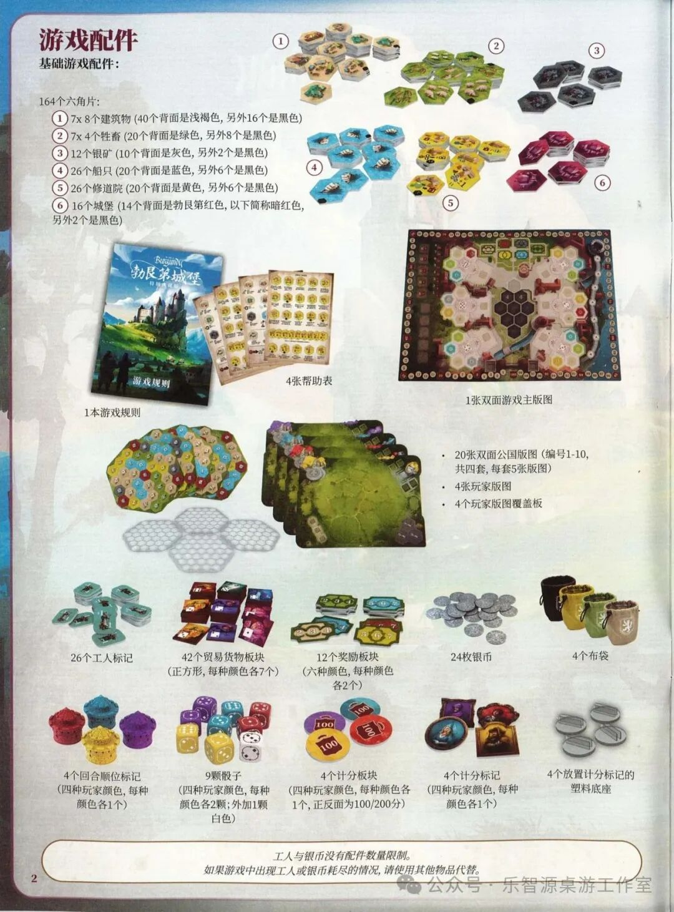
164 个六角片：
- 7x 8 个建筑物（40 个背面是浅褐色，另外 16 个是黑色）
- 7x 4 个牲畜（20 个背面是绿色，另外 8 个是黑色）
- 12 个银矿（10 个背面是灰色，另外 2 个是黑色）
- 26 个船只（20 个背面是蓝色，另外 6 个是黑色）
- 26 个修道院（20 个背面是黄色，另外 6 个是黑色）
- 16 个城堡（14 个背面是勃艮第红色，以下简称暗红色，另外 2 个是黑色）
- 1 本游戏规则；4 张帮助表
- 1 张双面游戏主版图
- 20 张双面公国版图（编号 1-10，共四套，每套 5 张版图）
- 4 张玩家版图；4 个玩家版图覆盖板
- 26 个工人标记
- 42 个贸易货物板块（正方形，每种颜色各 7 个）
- 12 个奖励板块（六种颜色，每种颜色各 2 个）
- 24 枚银币；4 个布袋
- 4 个回合顺位标记（四种玩家颜色，每种颜色各 1 个）
- 9 颗骰子（四种玩家颜色，每种颜色各 2 颗；外加 1 颗白色）
- 4 个计分板块（四种玩家颜色，每种颜色各 1 个，正反面为 100/200 分）
- 4 个计分标记；4 个放置计分标记的塑料底座
工人与银币没有配件数量限制。如果游戏中出现工人或银币耗尽的情况，请使用其他物品代替。
扩展配件
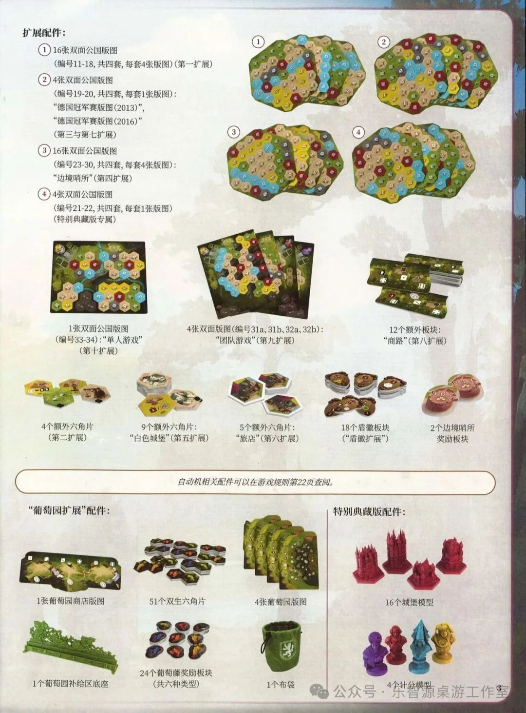
- 16 张双面公国版图（编号 11-18，共四套，每套 4 张版图）（第一扩展）
- 4 张双面公国版图（编号 19-20，共四套，每套 1 张版图）：「德国冠军赛版图 (2013)」「德国冠军赛版图 (2016)」（第三与第七扩展）
- 16 张双面公国版图（编号 23-30，共四套，每套 4 张版图）：「边境哨所」（第四扩展）
- 4 张双面公国版图（编号 21-22，共四套，每套 1 张版图）（特别典藏版专属）
- 1 张双面公国版图（编号 33-34）：「单人游戏」（第十扩展）
- 4 张双面版图（编号 31a、31b、32a、32b）：「团队游戏」（第九扩展）
- 12 个额外板块：「商路」（第八扩展）
- 4 个额外六角片（第二扩展）
- 9 个额外六角片：「白色城堡」（第五扩展）
- 5 个额外六角片：「旅店」（第六扩展）
- 18 个盾徽板块（盾徽扩展）；2 个边境哨所奖励板块
自动机相关配件可以在游戏规则第 22 页查阅。
「葡萄园扩展」配件：1 张葡萄园商店版图；51 个双生六角片；4 张葡萄园版图；1 个葡萄园补给区底座；24 个葡萄藤奖励板块（共六种类型）；1 个布袋。
特别典藏版配件：16 个城堡模型；4 个计分模型。
游戏介绍
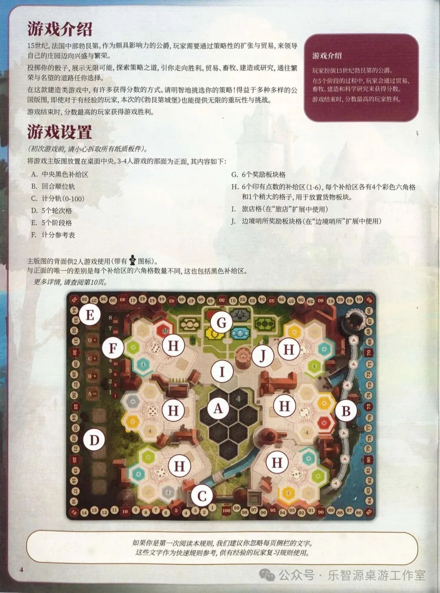
15 世纪，法国中部勃艮第。作为颇具影响力的公爵，玩家需要通过策略性的扩张与贸易，来领导自己的庄园迈向兴盛与繁荣。
投掷你的骰子，展示无限可能，探索策略之道，引你走向胜利。贸易、畜牧、建造或研究，通往繁荣与名望的道路任你选择。
在这款建造类游戏中，有许多获得分数的方式。请明智地挑选你的策略！得益于多种多样的公国版图，即使对于有经验的玩家，本次的《勃艮第城堡》也能提供无限的重玩性与挑战。
游戏结束时，分数最高的玩家获得游戏胜利。
游戏设置
（初次游戏前，请小心拆取所有纸质板件。）
将游戏主版图放置在桌面中央。3-4 人游戏的那面为正面，其内容如下：
- A. 中央黑色补给区
- B. 回合顺位轨
- C. 计分轨（0-100）
- D. 5 个轮次格
- E. 5 个阶段格
- F. 计分参考表
- G. 6 个奖励板块格
- H. 6 个印有点数的补给区（1-6），每个补给区各有 4 个彩色六角格和 1 个稍大的格子，用于放置货物板块。
- I. 旅店格（在「旅店」扩展中使用）
- J. 边境哨所奖励板块格（在「边境哨所」扩展中使用）
主版图的背面供 2 人游戏使用（带有二人小图标）。与正面的唯一差别是每个补给区的六角格数量不同，这也包括黑色补给区。
更多详情，请查阅第 10 页。
如果你是第一次阅读本规则，我们建议你忽略原书每页侧栏的文字。这些文字作为快速规则参考，供有经验的玩家复习规则使用。
- 将游戏主版图以对应玩家人数面放置。2 人游戏面印有二人小图标。
- 将 24 枚银币、26 个工人标记和白色骰子一同放置在主版图旁。
- 将 164 个六角片按照各自背面的颜色进行分类。然后将牲畜（绿色）、建筑物（浅褐色）、修道院（黄色）和黑色补给六角片（黑色）分别放入对应颜色的布袋中。
- 将城堡（暗红色）、船只（蓝色）和银矿（灰色）六角片正面朝上放置在主版图旁。注意：所有分类好的六角片构成了各自的供应堆。
- 将 42 个贸易货物板块（正方形）正面朝下洗混。然后从中选择 25 个，并将它们分为 5 个正面朝下的货物板块堆，将这些板块堆分别放置在游戏主版图印有字母 A-E 的 5 个阶段格上。将剩余的 17 个货物正面朝下放置在一旁备用。
- 将 12 个奖励板块放置在游戏主版图上的对应格。每格上放置 2 个对应颜色的奖励板块，印有「5/6/7」的板块放置在顶部。
- 每位玩家选择一种颜色并拿取：
- 所选颜色的玩家版图、骰子、回合顺位标记和计分标记。
- 随机的 1 张公国版图。选择任意一面，并将它放置在你的玩家版图上。然后把玩家版图覆盖板放在上面。注意：如果这是你的初次游戏，建议拿取编号 1 或 2 的公国版图（且每位玩家都拿取相同编号）。
- 从剩余的 17 个货物中随机拿取 3 个货物；将它们正面朝上放置在你玩家版图左下角的货物储存格上。将相同点数的货物堆叠放置在一起。将仍然剩余的货物放回游戏盒中，本局游戏不会再使用它们。
- 1 张帮助表；将它放置在你的玩家版图旁。帮助表上详细解释了你回合中可以执行的行动，以及放置六角片的收益。
- 1 枚银币；将它放置在你玩家版图左上角的对应格。
- 每位玩家将自己的计分标记放置在计分轨的初始位置（1 和 100 之间的位置）。
- 每位玩家投掷 1 颗骰子，来决定谁是起始玩家（点数最大的玩家是起始玩家）。起始玩家获得 1 个工人，并按照顺时针方向，下一位玩家获得 2 个工人，第三位玩家获得 3 个工人，第四位玩家获得 4 个工人。现在，从末位玩家开始，按照行动顺位逆序，每位玩家依次将自己的回合顺位标记放置在回合顺位轨的第一格（位于主版图右上角），从下到上依次堆叠，起始玩家标记位于最顶部。注意：玩家在游戏中放置船只时，回合顺位可能会改变。游戏顺位并不总是按照顺时针方向进行。
- 拿取 1 个城堡（暗红色）六角片，将它正面朝上放置在你公国版图的任意一个暗红色格子上（所有玩家需要同时选择）。如果这是你的初次游戏，并选择了编号 1 或 2 的公国，我们建议将城堡放置在公国中央点数 6 的格子上。
- 将白色骰子交给起始玩家。
游戏流程
游戏阶段
游戏包含 5 个阶段（A-E），从阶段 A 开始。每个阶段包含 5 个轮次。
每个阶段开始时，执行以下操作：
- 将留在游戏主版图上的所有六角片移除，放回游戏盒中（阶段 A 开始时略过此步骤。）重要：不要移除补给区的货物！
- 根据印有点数的六个补给区上每个六角格的颜色，从六角片供应堆中随机拿取对应颜色的六角片并逐一放置在每个六角格上。然后将这些六角片翻至正面朝上。注意：3-4 人游戏主版图的部分格子上印有「4」，仅在进行 4 人游戏时补充这些格子。还有一个格子上印有「3BD」，在进行 4 人游戏时会正常在这个格子补充城堡；但在 3 人游戏中的阶段 B 和 D 时，这个格子改为补充银矿，而不是城堡。
- 随机拿取背面为黑色的六角片来补充主版图中央的黑色补给区。然后将这些六角片翻至正面朝上。
- 拿取当前阶段格上的 5 个货物，将它们正面朝上分别放置在 5 个轮次格上。
五个游戏轮次
在新的阶段设置完毕后，玩家将进行 5 个轮次。每个轮次都有着相同的流程：
首先，所有玩家投掷各自的 2 颗骰子。起始玩家（即回合顺位轨上标记最接近高塔的人，同格情况下标记更靠顶部的优先）还会投掷白色骰子。每位玩家将自己投掷后的骰子放置在自己玩家版图的已投掷骰子格上。骰子点数必须对所有玩家可见。
注意：同时投掷骰子，能让其他玩家在轮到自己回合行动之前就提前进行规划。
由起始玩家开始当前轮次的行动。首先，起始玩家从轮次格拿取第一个（从底部开始算起）正面朝上的货物板块，并将其放置在与白色骰子点数对应的补给区。白色骰子在当前轮次的作用到此为止。起始玩家不可以在自己回合中将白色骰子用于行动（也不能用工人来更改它的点数）。
然后，起始玩家进行自己的回合。起始玩家的回合结束后，回合顺位的下一位玩家（即剩余玩家中回合顺位标记最接近高塔的人，同格情况下标记更靠顶部的优先）进行自己的回合。所有玩家的回合都结束后，开始下一轮，以此类推。
由于每个阶段开始时，轮次格上都有 5 个货物，且每轮都会有 1 个货物放置到某个补给区上，因此你始终可以得知当前所处轮次，以及当前阶段（乃至整个游戏）还剩余多少轮次。
玩家回合
玩家在自己的每个回合中，可以执行两个骰子行动，每个骰子行动都会使用 1 颗骰子。使用 1 颗骰子时，将它从已投掷骰子格放置到已使用骰子格上。
工人标记可以在任何时候用于更改你骰子的点数。工人使用后，将其放回主版图旁的供应堆中。你使用的每个工人会令你将 1 颗骰子的点数增加或减少 1 点。你可以使用工人将点数从 1 改为 6，反之亦然。你可以使用多个工人来更改 1 颗骰子的点数。使用工人不属于行动。
示例：Anna 使用了 2 个工人，将 1 颗骰子的点数从 2 改为了 6，然后从 6 点的补给区拿取了 1 个六角片。
行动
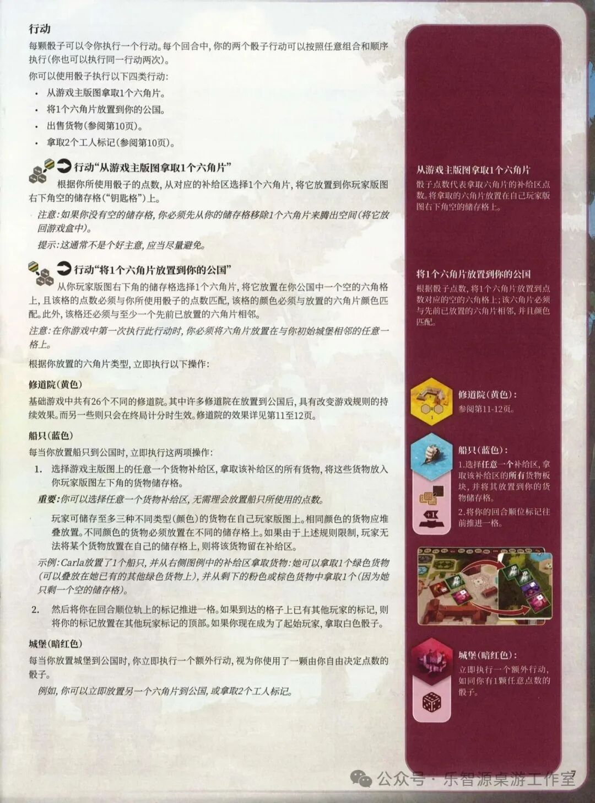
每颗骰子可以令你执行一个行动。每个回合中，你的两个骰子行动可以按照任意组合和顺序执行（你也可以执行同一行动两次）。你可以使用骰子执行以下四类行动：
- 从游戏主版图拿取 1 个六角片。
- 将 1 个六角片放置到你的公国。
- 出售货物（参阅第 10 页）。
- 拿取 2 个工人标记（参阅第 10 页）。
行动「从游戏主版图拿取 1 个六角片」
根据你所使用骰子的点数，从对应的补给区选择 1 个六角片，将它放置到你玩家版图右下角空的储存格（「钥匙格」）上。
注意：如果你没有空的储存格，你必须先从你的储存格移除 1 个六角片来腾出空间（将它放回游戏盒中）。
提示：这通常不是个好主意，应当尽量避免。
行动「将 1 个六角片放置到你的公国」
从你玩家版图右下角的储存格选择 1 个六角片，将它放置在你公国中一个空的六角格上，且该格的点数必须与你所使用骰子的点数匹配，该格的颜色必须与放置的六角片颜色匹配。此外，该格还必须与至少一个先前已放置的六角片相邻。
注意：在你游戏中第一次执行此行动时，你必须将六角片放置在与你初始城堡相邻的任意一格上。
根据你放置的六角片类型，立即执行以下操作：
修道院（黄色）
基础游戏中共有 26 个不同的修道院。其中许多修道院在放置到公国后，具有改变游戏规则的持续效果。而另一些则只会在终局计分时生效。修道院的效果详见第 11 至 12 页。
船只（蓝色）
每当你放置船只到公国时，立即执行这两项操作：
- 选择游戏主版图上的任意一个货物补给区，拿取该补给区的所有货物，将这些货物放入你玩家版图左下角的货物储存格。重要：你可以选择任意一个货物补给区，无需理会放置船只所使用的点数。玩家可储存至多三种不同类型（颜色）的货物在自己玩家版图上。相同颜色的货物应堆叠放置。不同颜色的货物必须放置在不同的储存格上。如果由于上述规则限制，玩家无法将某个货物放置在自己的储存格上，则将该货物留在补给区。示例：Carla 放置了 1 个船只，并从补给区拿取货物：她可以拿取 1 个绿色货物（可以叠放在她已有的其他绿色货物上），并从剩下的粉色或棕色货物中拿取 1 个（因为她只剩一个空的储存格）。
- 然后将你在回合顺位轨上的标记推进一格。如果到达的格子上已有其他玩家的标记，则将你的标记放置在其他玩家标记的顶部。如果你现在成为了起始玩家，拿取白色骰子。
城堡（暗红色）
每当你放置城堡到公国时，你立即执行一个额外行动，视为你使用了一颗由你自由决定点数的骰子。例如，你可以立即放置另一个六角片到公国，或拿取 2 个工人标记。
银矿（灰色）
银矿在放置时没有即时效果。每个阶段结束时，你的公国每有 1 个银矿，就令你从供应堆获得 1 枚银币。
牲畜（绿色）
每当你放置牲畜到公国时，你立即进行计分。每个牲畜六角片上都印有 2-4 只牲畜，你获得放置的六角片上所示牲畜只数的分数。
此外，如果你放置牲畜的同一个牧场（即由相连绿色六角格构成的连续区域）中先前已放置相同类型的牲畜六角片，则你还会获得这些六角片上牲畜只数的分数（注意刚刚放置的牲畜不会重复计分，参阅下方示例）。
注意：你之前放置的牲畜不需要与新放置的六角片相邻，它们只需要位于同一个牧场中即可计分。你不会对处于不同牧场中的牲畜进行额外计分。
示例：Ben 放置了 1 个印有 4 只牛的六角片到他的一个牧场靠上方的格子，该牧场已有 1 个印有 3 只牛的六角片和 1 个印有 3 只羊的六角片。他由于放置的 4 只牛和之前已放置在牧场中的 3 只牛而获得 7 分。在之后的游戏中，如果 Ben 在该牧场中再放置 1 个印有 4 只牛的六角片，则他会获得 11 分（4+4+3）。如果 Ben 在该牧场中再放置 1 个印有 2 只羊的六角片，他会获得 5 分（放置的 2 只羊加上牧场中已有的 3 只羊）。
建筑物（浅褐色）
每当你放置建筑物到公国时，你可以立即使用该建筑物的一次效果（如帮助表上的符号所示）。
重要：建筑物共八种，每种建筑物在每个城镇（即由相连浅褐色六角格构成的连续区域）只能建造一次。根据公国的不同，可能会存在 2-6 个大小不等（1-8 格）的城镇。
注意：如果你仔细观察，可以发现每个六角片的插画都暗示了其效果。例如，教堂拥有银矿、修道院和城堡的颜色；银行有两个银色塔顶；城堡中则包含了一颗骰子。
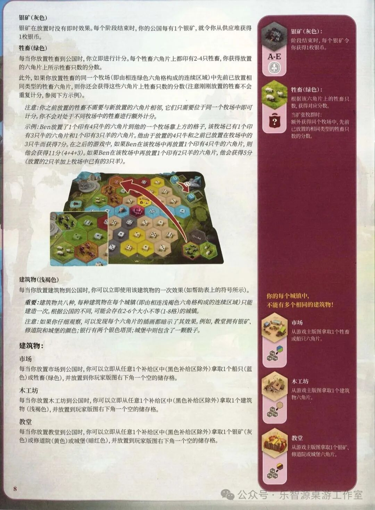
市场：每当你放置市场到公国时，你可以立即从任意 1 个补给区中（黑色补给区除外）拿取 1 个船只（蓝色）或牲畜（绿色），并放置到你玩家版图右下角一个空的储存格。
木工坊：每当你放置木工坊到公国时，你可以立即从任意 1 个补给区中（黑色补给区除外）拿取 1 个建筑物（浅褐色），并放置到玩家版图右下角一个空的储存格。
教堂：每当你放置教堂到公国时，你可以立即从任意 1 个补给区中（黑色补给区除外）拿取 1 个银矿（灰色）或修道院（黄色）或城堡（暗红色），并放置到玩家版图右下角一个空的储存格。
仓库：每当你放置仓库到公国时，你可以立即选择你拥有的任意一种类型的所有货物（无需使用骰子），并将其全部出售，如同你执行了「出售货物」行动（参阅第 10 页）。
宿舍：每当你放置宿舍到公国时，你立即从供应堆获得 4 个工人标记。
银行：每当你放置银行到公国时，你立即从供应堆获得 2 枚银币。
市政厅：每当你放置市政厅到公国时，你可以立即从你的储存格选择另一个六角片，并将它放置在你的公国，视为你使用了一颗由你自由决定点数的骰子。放置的六角片如常触发效果。
瞭望塔：每当你放置瞭望塔到公国时，你立即获得 4 分。
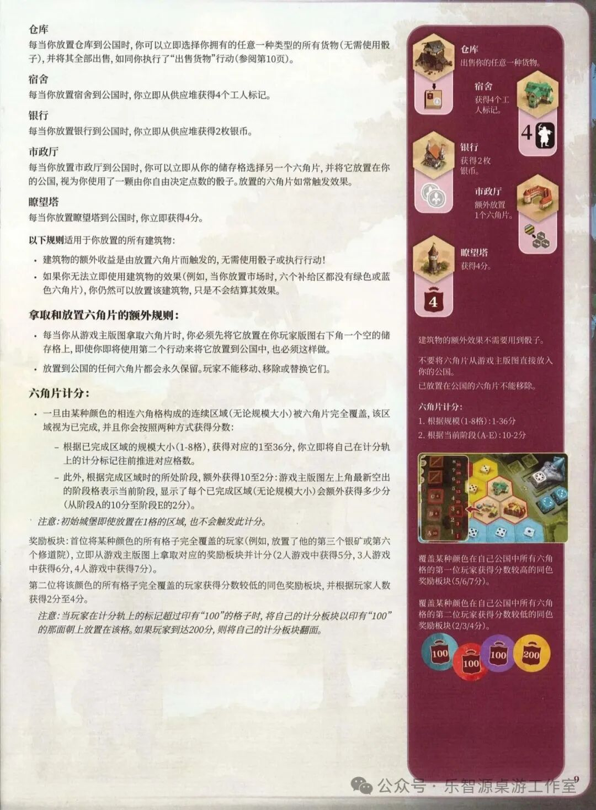
以下规则适用于你放置的所有建筑物：
- 建筑物的额外收益是由放置六角片而触发的，无需使用骰子或执行行动！
- 如果你无法立即使用建筑物的效果（例如，当你放置市场时，六个补给区都没有绿色或蓝色六角片），你仍然可以放置该建筑物，只是不会结算其效果。
拿取和放置六角片的额外规则
- 每当你从游戏主版图拿取六角片时，你必须先将它放置在你玩家版图右下角一个空的储存格上，即使你即将使用第二个行动来将它放置到公国中，也必须这样做。
- 放置到公国的任何六角片都会永久保留。玩家不能移动、移除或替换它们。
六角片计分
- 一旦由某种颜色的相连六角格构成的连续区域（无论规模大小）被六角片完全覆盖，该区域视为已完成，并且你会按照两种方式获得分数：
- 根据已完成区域的规模大小（1-8 格），获得对应的 1 至 36 分，你立即将自己在计分轨上的计分标记往前推进对应格数。
- 此外，根据完成区域时的所处阶段，额外获得 10 至 2 分：游戏主版图左上角最新空出的阶段格表示当前阶段，显示了每个已完成区域（无论规模大小）会额外获得多少分（从阶段 A 的 10 分至阶段 E 的 2 分）。
注意：初始城堡即使放置在 1 格的区域，也不会触发此计分。
奖励板块：首位将某种颜色的所有格子完全覆盖的玩家（例如，放置了他的第三个银矿或第六个修道院），立即从游戏主版图上拿取对应的奖励板块并计分（2 人游戏中获得 5 分，3 人游戏中获得 6 分，4 人游戏中获得 7 分）。第二位将该颜色的所有格子完全覆盖的玩家获得分数较低的同色奖励板块，并根据玩家人数获得 2 分至 4 分。
注意：当玩家在计分轨上的标记超过印有「100」的格子时，将自己的计分板块以印有「100」的那面朝上放置在该格。如果玩家到达 200 分，则将自己的计分板块翻面。
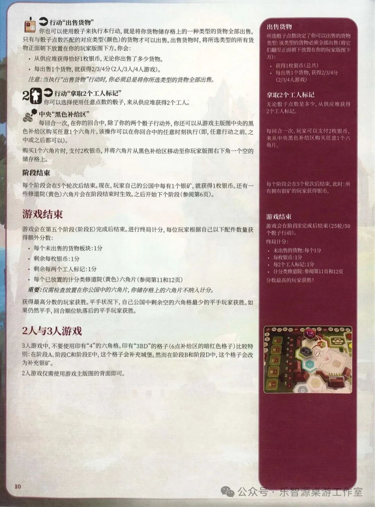
行动「出售货物」
你也可以使用骰子来执行本行动，就是将你货物储存格上的一种类型的货物全部出售。只有与骰子点数匹配的对应类型（颜色）的货物才可以出售。出售货物时，将所选类型的所有货物正面朝下放置在你的玩家版图下方。你会：
- 从供应堆获得恰好 1 枚银币，无论你出售了多少货物。
- 每出售 1 个货物，就获得 2/3/4 分（2 人/3 人/4 人游戏）。
注意：当执行「出售货物」行动时，你必须总是将你所选类型的货物全部出售。
行动「拿取 2 个工人标记」
你可以选择使用任意点数的骰子，来从供应堆获得 2 个工人。
中央「黑色补给区」
每回合一次，在你的回合中，除了你的两个骰子行动外，你还可以从游戏主版图中央的黑色补给区购买任意 1 个六角片。该操作可以在你回合中的任意时刻执行（即，任意行动之前、之中或之后都可以）。购买 1 个六角片时，支付 2 枚银币，并将六角片从黑色补给区移动至你玩家版图右下角一个空的储存格上。
阶段结束
每个阶段会在 5 个轮次后结束。现在，玩家自己的公国中每有 1 个银矿，就获得 1 枚银币。还有一些修道院（黄色）六角片会在阶段结束时生效。之后开始下个阶段（参阅第 6 页）。
游戏结束
游戏会在第五个阶段（阶段 E）完成后结束。进行终局计分，每位玩家根据自己以下配件数量获得额外分数：
- 每个未出售的货物板块：1 分
- 剩余每枚银币：1 分
- 剩余每两个工人标记：1 分
- 每个已放置的计分类修道院（黄色）六角片（参阅第 11 和 12 页）
重要：仅需检查放置在你公国中的六角片，你储存格上的六角片不纳入计分。
获得最高分数的玩家获胜。平手状况下，自己公国中剩余空的六角格最少的平手玩家获胜。如果仍然平手，回合顺位轨落后的平手玩家获胜。
2 人与 3 人游戏
3 人游戏中，不要使用印有「4」的六角格。印有「3BD」的格子（6 点补给区的暗红色格子）比较特别：在阶段 A、阶段 C 和阶段 E 中，这个格子会补充城堡。然而在阶段 B 和阶段 D 中，这个格子会改为补充银矿。
2 人游戏仅需使用游戏主版图的背面即可。
修道院（黄色）
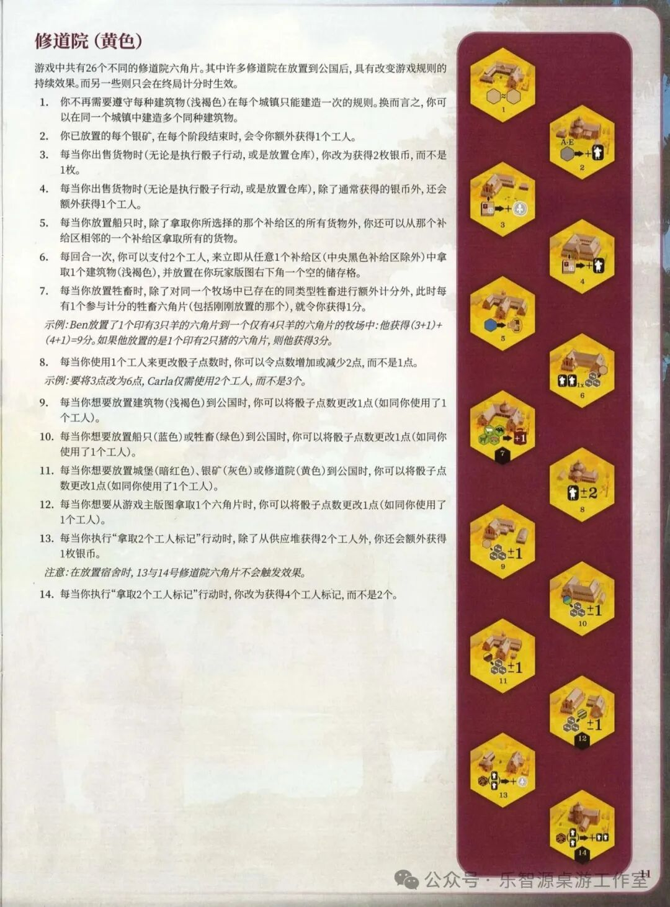
游戏中共有 26 个不同的修道院六角片。其中许多修道院在放置到公国后，具有改变游戏规则的持续效果。而另一些则只会在终局计分时生效。
- 你不再需要遵守每种建筑物（浅褐色）在每个城镇只能建造一次的规则。换言之，你可以在同一个城镇中建造多个同种建筑物。
- 你已放置的每个银矿，在每个阶段结束时，会令你额外获得 1 个工人。
- 每当你出售货物时（无论是执行骰子行动，或是放置仓库），你改为获得 2 枚银币，而不是 1 枚。
- 每当你出售货物时（无论是执行骰子行动，或是放置仓库），除了通常获得的银币外，还会额外获得 1 个工人。
- 每当你放置船只时，除了拿取你所选择的那个补给区的所有货物外，你还可以从那个补给区相邻的一个补给区拿取所有的货物。
- 每回合一次，你可以支付 2 个工人，来立即从任意 1 个补给区（中央黑色补给区除外）中拿取 1 个建筑物（浅褐色），并放置在你玩家版图右下角一个空的储存格。
- 每当你放置牲畜时，除了对同一个牧场中已存在的同类型牲畜进行额外计分外，此时每有 1 个参与计分的牲畜六角片（包括刚刚放置的那个），就令你获得 1 分。示例：Ben 放置了 1 个印有 3 只羊的六角片到一个仅有 4 只羊的六角片的牧场中：他获得 (3+1)+(4+1)=9 分。如果他放置的是 1 个印有 2 只猪的六角片，则他获得 3 分。
- 每当你使用 1 个工人来更改骰子点数时，你可以令点数增加或减少 2 点，而不是 1 点。示例：要将 3 点改为 6 点，Carla 仅需使用 2 个工人，而不是 3 个。
- 每当你想要放置建筑物（浅褐色）到公国时，你可以将骰子点数更改 1 点（如同你使用了 1 个工人）。
- 每当你想要放置船只（蓝色）或牲畜（绿色）到公国时，你可以将骰子点数更改 1 点（如同你使用了 1 个工人）。
- 每当你想要放置城堡（暗红色）、银矿（灰色）或修道院（黄色）到公国时，你可以将骰子点数更改 1 点（如同你使用了 1 个工人）。
- 每当你想要从游戏主版图拿取 1 个六角片时，你可以将骰子点数更改 1 点（如同你使用了 1 个工人）。
- 每当你执行「拿取 2 个工人标记」行动时，除了从供应堆获得 2 个工人外，你还会额外获得 1 枚银币。注意：在放置宿舍时，13 与 14 号修道院六角片不会触发效果。
- 每当你执行「拿取 2 个工人标记」行动时，你改为获得 4 个工人标记，而不是 2 个。
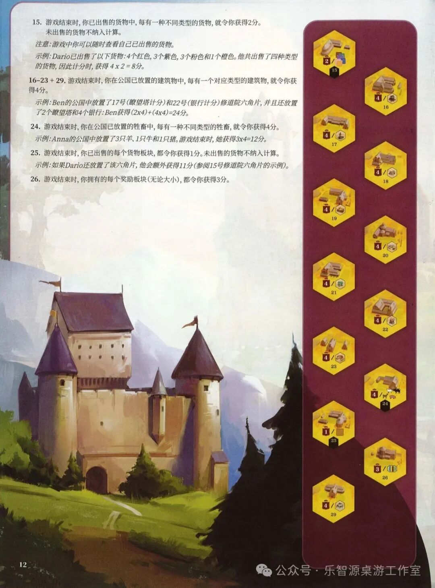
- 游戏结束时，你已出售的货物中，每有一种不同类型的货物，就令你获得 2 分。未出售的货物不纳入计算。注意：游戏中你可以随时查看自己已出售的货物。示例：Dario 已出售了以下货物：4 个红色，2 个紫色，3 个粉色和 1 个橙色。他共出售了四种类型的货物，因此计分时，获得 4 x 2 = 8 分。
- 16–23 + 29 号：游戏结束时，你在公国已放置的建筑物中，每有一个对应类型的建筑物，就令你获得 4 分。示例：Ben 的公国中放置了 17 号（瞭望塔计分）和 22 号（银行计分）修道院六角片，并且还放置了 2 个瞭望塔和 4 个银行：Ben 获得 (2x4)+(4x4)=24 分。
- 24 号：游戏结束时，你在公国已放置的牲畜中，每有一种不同类型的牲畜，就令你获得 4 分。示例：Anna 的公国中放置了 3 只羊、1 只牛和 1 只猪。游戏结束时，她获得 3x4=12 分。
- 25 号：游戏结束时，你已出售的每个货物板块，都令你获得 1 分。未出售的货物不纳入计算。示例：如果 Dario 还放置了该六角片，他会额外获得 11 分（参阅 15 号修道院六角片的示例）。
- 26 号：游戏结束时，你拥有的每个奖励板块（无论大小），都令你获得 3 分。
扩展介绍
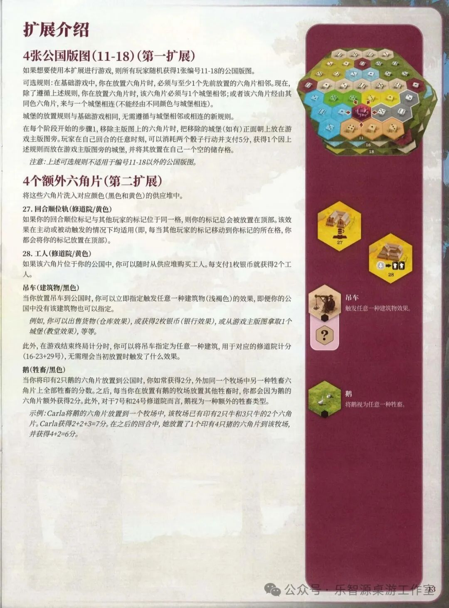
4 张公国版图（11-18）（第一扩展）
如果想要使用本扩展进行游戏，则所有玩家随机获得 1 张编号 11-18 的公国版图。
可选规则：在基础游戏中，你在放置六角片时，必须与至少 1 个先前放置的六角片相邻。现在，除了遵循上述规则，你在放置六角片时，该六角片必须与 1 个城堡相邻；或者该六角片经由其同色六角片，来与一个城堡相连（不能经由不同颜色与城堡相连）。城堡的放置规则与基础游戏相同，无需遵循与城堡相邻或相连的新规则。
在每个阶段开始的步骤 1，移除主版图上的六角片时，把移除的城堡（如有）正面朝上放在游戏主版图旁。玩家在自己回合的任意时刻，可以消耗两个骰子行动并支付 5 分，获得 1 个因上述规则而放在游戏主版图旁的城堡，并将其放置在自己一个空的储存格。
注意：上述可选规则不适用于编号 11-18 以外的公国版图。
4 个额外六角片（第二扩展）
将这些六角片洗入对应颜色（黑色和黄色）的供应堆中。
27. 回合顺位轨（修道院/黄色）：如果你的回合顺位标记与其他玩家的标记位于同一格，你的标记总会被放置在顶部。该效果在主动或被动触发的情况下均适用（即，每当其他玩家的标记移动到你标记的所在格，你都会将你的标记放置在顶部）。
28. 工人（修道院/黄色）：如果该六角片位于你的公国中，你可以随时从供应堆购买工人。每支付 1 枚银币就获得 2 个工人。
吊车（建筑物/黑色）：当你放置吊车到公国时，你可以立即指定触发任意一种建筑物（浅褐色）的效果，即便你的公国中没有该建筑物也可以指定。例如，你可以出售货物（仓库效果），或获得 2 枚银币（银行效果），或从游戏主版图拿取 1 个城堡（教堂效果），等等。此外，在游戏结束终局计分时，你可以将吊车指定为任意一种建筑，用于对应的修道院计分 (16-23+29)，无需理会当初放置时触发了什么效果。
鹅（牲畜/黑色）：当你将印有 2 只鹅的六角片放置到公国时，你如常获得 2 分，外加同一个牧场中另一种牲畜六角片上全部牲畜的分数。之后，每当你在放置有鹅的牧场放置其他牲畜时，你都会因为鹅的六角片额外获得 2 分。此外，对于 7 号和 24 号修道院而言，鹅视为一种额外的牲畜类型。
示例：Carla 将鹅的六角片放置到一个牧场中，该牧场已有印有 2 只牛和 3 只牛的 2 个六角片。Carla 获得 2+2+3=7 分。在之后的回合中，她放置了 1 个印有 4 只猪的六角片到该牧场，并获得 4+2=6 分。
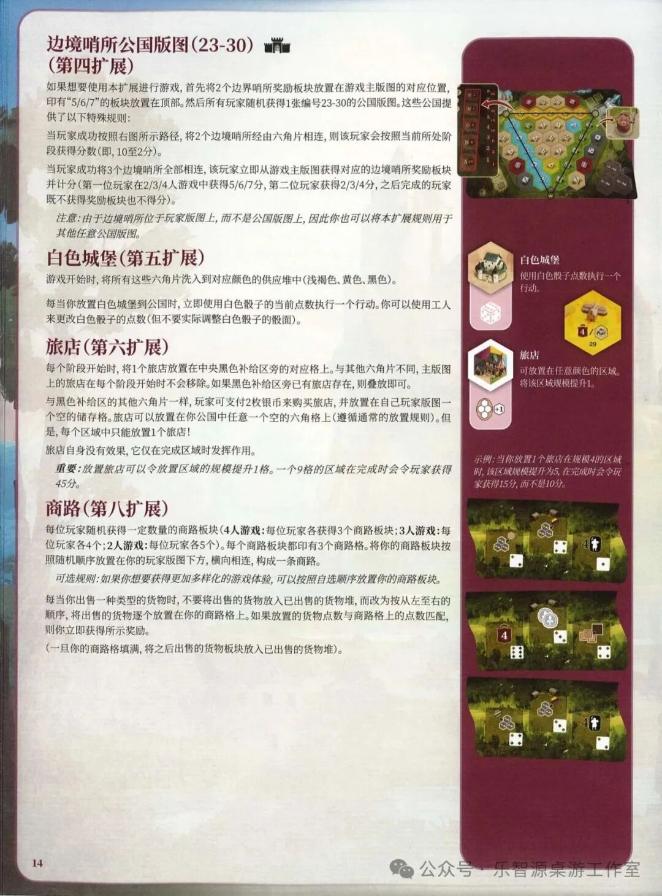
边境哨所公国版图（23-30）（第四扩展）
如果想要使用本扩展进行游戏，首先将 2 个边境哨所奖励板块放置在游戏主版图的对应位置，印有「5/6/7」的板块放置在顶部。然后所有玩家随机获得 1 张编号 23-30 的公国版图。这些公国提供了以下特殊规则：
当玩家成功按照版图所示路径，将 2 个边境哨所经由六角片相连，则该玩家会按照当前所处阶段获得分数（即：10 至 2 分）。当玩家成功将 3 个边境哨所全部相连，该玩家立即从游戏主版图获得对应的边境哨所奖励板块并计分（第一位玩家在 2/3/4 人游戏中获得 5/6/7 分，第二位玩家获得 2/3/4 分，之后完成的玩家既不获得奖励板块也不得分）。
注意：由于边境哨所位于玩家版图上，而不是公国版图上，因此你也可以将本扩展规则用于其他任意公国版图。
白色城堡（第五扩展）
游戏开始时，将所有这些六角片洗入到对应颜色的供应堆中（浅褐色、黄色、黑色）。每当你放置白色城堡到公国时，立即使用白色骰子的当前点数执行一个行动。你可以使用工人来更改白色骰子的点数（但不要实际调整白色骰子的骰面）。
旅店（第六扩展）
每个阶段开始时，将 1 个旅店放置在中央黑色补给区旁的对应格上。与其他六角片不同，主版图上的旅店在每个阶段开始时不会移除。如果黑色补给区旁已有旅店存在，则叠放即可。
与黑色补给区的其他六角片一样，玩家可支付 2 枚银币来购买旅店，并放置在自己玩家版图一个空的储存格。旅店可以放置在你公国中任意一个空的六角格上（遵循通常的放置规则）。但是，每个区域中只能放置 1 个旅店！
旅店自身没有效果，它仅在完成区域时发挥作用。
重要：放置旅店可以令放置区域的规模提升 1 格。一个 9 格的区域在完成时会令玩家获得 45 分。
商路（第八扩展）
每位玩家随机获得一定数量的商路板块（4 人游戏：每位玩家各获得 3 个商路板块；3 人游戏：每位玩家各 4 个；2 人游戏：每位玩家各 5 个）。每个商路板块都印有 3 个商路格。将你的商路板块按照随机顺序放置在你的玩家版图下方，横向相连，构成一条商路。可选规则：如果你想要获得更加多样化的游戏体验，可以按照自选顺序放置你的商路板块。
每当你出售一种类型的货物时，不要将出售的货物放入已出售的货物堆，而改为按从左至右的顺序，将出售的货物逐个放置在你的商路格上。如果放置的货物点数与商路格上的点数匹配，则你立即获得所示奖励。（一旦你的商路格填满，将之后出售的货物板块放入已出售的货物堆。）
团队游戏（第九扩展）
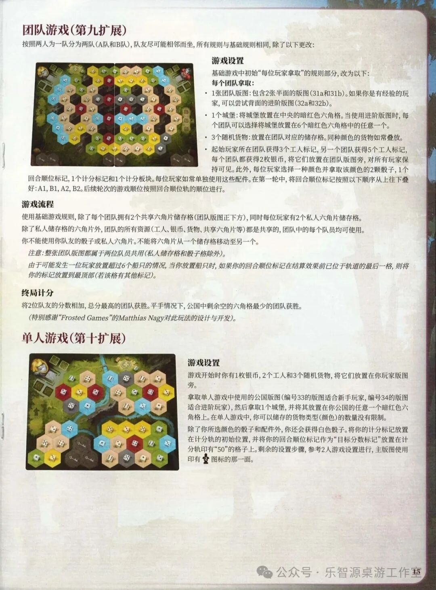
按照两人为一队分为两队（A 队和 B 队），队友尽可能相邻而坐，所有规则与基础规则相同，除了以下更改：
游戏设置
基础游戏中初始「每位玩家拿取」的规则部分，改为以下。每个团队拿取：
- 1 张团队版图：包含 2 张半面的版图（31a 和 31b）。如果你是有经验的玩家，可以尝试背面的进阶版图（32a 和 32b）。
- 1 个城堡：将城堡放置在中央的暗红色六角格。当使用进阶版图时，每个团队可以选择将城堡放置在 6 个暗红色六角格中的任意一个。
- 3 个随机货物：放在团队对应的储存格。同种颜色的货物如常叠放。
- 起始玩家所在团队获得 3 个工人标记，另一个团队获得 5 个工人标记。每个团队都获得 2 枚银币，将它们放置在团队版图旁，对所有玩家保持可见。此外，每位玩家选择一种颜色并拿取该颜色的 2 颗骰子，1 个回合顺位标记，1 个计分标记和 1 个计分板块。每位玩家如常单独使用这些配件。在第一轮中，将回合顺位标记按照以下顺序从上往下叠好：A1, B1, A2, B2。后续轮次的游戏顺位按照回合顺位轨的顺位进行。
游戏流程
使用基础游戏规则，除了每个团队拥有 2 个共享六角片储存格（团队版图正下方），同时每位玩家有 2 个私人六角片储存格。除了私人储存格的六角片外，团队的所有资源（工人、银币、货物、共享六角片等）都是共享的，团队中的每个队员均可使用。你不能使用你队友的骰子或私人六角片。不能将六角片从一个储存格移动至另一个。
注意：整张团队版图都属于两位队员共用（私人储存格和骰子格除外）。由于可能发生一位玩家放置超过 6 个船只的情况，当你放置船只时，如果你的回合顺位标记在结算效果前已位于轨道的最后一格，则将你的标记放置到最顶部（若该格有其他标记）。
终局计分
将 2 位队友的分数相加，总分最高的团队获胜。平手情况下，公国中剩余空的六角格最少的团队获胜。
（特别感谢「Froted Games」的 Matthias Nagy 对此玩法的设计与开发。）
单人游戏（第十扩展）
游戏设置
游戏开始时你有 1 枚银币，2 个工人和 3 个随机货物，将它们放置在你玩家版图旁。
拿取单人游戏中使用的公国版图（编号 33 的版图适合新手玩家，编号 34 的版图适合进阶玩家）。然后拿取 1 个城堡，并将其放置在你公国的任意一个暗红色六角格上。在单人游戏中，你可以储存的货物类型（颜色）的数量没有限制。
除了你所选颜色的骰子和配件外，你还会获得白色骰子。将你的计分标记放置在计分轨的初始位置，并将你的回合顺位标记作为「目标分数标记」放置在计分轨印有「50」的格子上。剩余的设置步骤，参考 2 人游戏设置进行，主版图使用印有二人小图标的那一面。
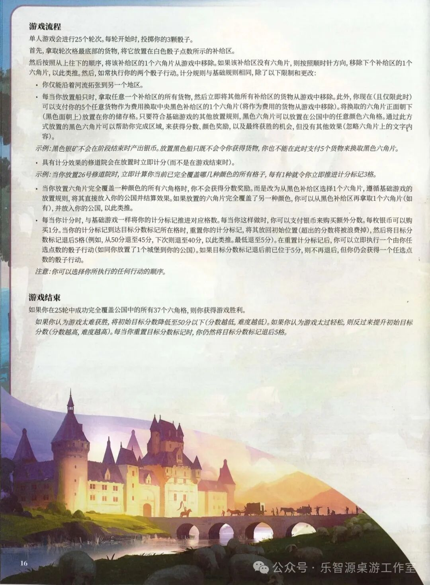
游戏流程
单人游戏会进行 25 个轮次。每轮开始时，投掷你的 3 颗骰子。
首先，拿取轮次格最底部的货物，将它放置在白色骰子点数所示的补给区。然后按照从上往下的顺序，将该补给区的 1 个六角片从游戏中移除。如果该补给区没有六角片，则按照顺时针方向，移除下个补给区的 1 个六角片，以此类推。然后，如常执行你的两个骰子行动。计分规则与基础规则相同，除了以下限制和更改：
- 你仅能沿着河流拓展到另一个地区。
- 每当你放置船只时，拿取任意一个补给区的所有货物，然后立即将其他所有补给区的货物从游戏中移除。此外，你现在（且仅限此时）可以支付你的 5 个任意货物作为费用换取中央黑色补给区的 1 个六角片（将作为费用的货物从游戏中移除）。将换取的六角片正面朝下（黑色面朝上）放置在你的储存格。只要符合基础游戏的其他放置规则，黑色六角片可以放置在公国中的任意颜色六角格。通过此方式放置的黑色六角片可以帮助你完成区域，来获得分数、颜色奖励，以及最终获胜的机会，但没有其他效果（忽略六角片上的文字内容）。示例：黑色银矿不会在阶段结束时产出银币。放置黑色船只既不会令你获得货物，你也不能在此时支付 5 个货物来换取黑色六角片。
- 具有计分效果的修道院会在放置时立即计分（而不是在游戏结束时）。示例：当你放置 26 号修道院时，立即计算你当前已完全覆盖哪几种颜色的所有格子，每有 1 种就令你立即推进计分标记 3 格。
- 当你放置六角片完全覆盖一种颜色的所有六角格时，你不会获得分数奖励。而是改为从黑色补给区选择 1 个六角片，遵循基础游戏的放置规则，将其直接放入你的公国并结算效果。如果放置的六角片完全覆盖了另一种颜色，你可以从黑色补给区再拿取 1 个六角片（如有），并放入你的公国，以此类推。
- 每当你计分时，与基础游戏一样将你的计分标记推进对应格数。每当你这样做时，你可以支付银币来购买额外分数。每枚银币可以购买 1 分。当你的计分标记到达目标分数标记所在格时，重置你的计分标记，将其放回初始位置（超出的分数将被浪费掉），然后将目标分数标记退后 5 格（例如，从 50 分退至 45 分，下次则退至 40 分，以此类推。最低退至 5 分）。在重置计分标记后，你可以立即执行一个由你任选点数的骰子行动（如同你放置了 1 个城堡到你的公国）。如果目标分数标记退后前已位于 5 分，则不再退后，但你仍会获得一个任选点数的骰子行动。
注意：你可以选择你所执行的任何行动的顺序。
游戏结束
如果你在 25 轮中成功完全覆盖公国中的所有 37 个六角格，则你获得游戏胜利。
如果你认为游戏太难获胜，将初始目标分数降低至 50 分以下（分数越低，难度越低）。如果你认为游戏太过轻松，则反过来提升初始目标分数（分数越高，难度越高）。每当你重置目标分数标记时，你仍将目标分数标记退后 5 格。
盾徽扩展
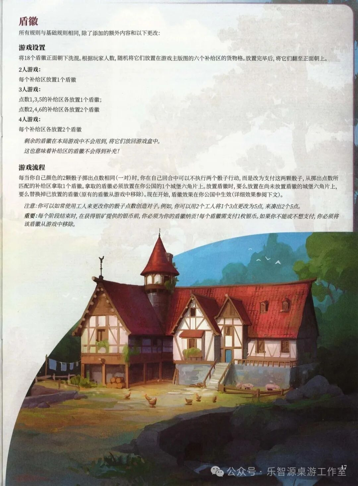
所有规则与基础规则相同，除了添加的额外内容和以下更改：
游戏设置
将 18 个盾徽正面朝下洗混。根据玩家人数，随机将它们放置在游戏主版图的六个补给区的货物格。放置完毕后，将它们翻至正面朝上。
- 2 人游戏：每个补给区放置 1 个盾徽。
- 3 人游戏：点数 1,3,5 的补给区各放置 1 个盾徽；点数 2,4,6 的补给区各放置 2 个盾徽。
- 4 人游戏：每个补给区各放置 2 个盾徽。
剩余的盾徽在本局游戏中不会用到，将它们放回游戏盒中。这也意味着补给区的盾徽不会得到补充！
游戏流程
每当你自己颜色的 2 颗骰子掷出点数相同（一对）时，你在自己回合中可以不执行两个骰子行动，而是改为支付这两颗骰子，从掷出点数所匹配的补给区拿取 1 个盾徽。拿取的盾徽必须放置在你公国的 1 个城堡六角片上。放置盾徽时，要么放置在尚未放置盾徽的城堡六角片上，要么替换掉已放置的盾徽（原有的盾徽从游戏中移除）。现在开始，盾徽效果在你公国中生效（详细效果参阅下文）。
注意：你可以如常使用工人来更改你的骰子点数创造对子。例如，你可以用 2 个工人将 1 个 3 点更改为 5 点，来凑出 2 个 5 点。
重要：每个阶段结束时，在获得银矿提供的银币前，你必须为你的盾徽纳贡！每个盾徽需支付 1 枚银币。如果你不能或不想支付，你必须将该盾徽从游戏中移除。
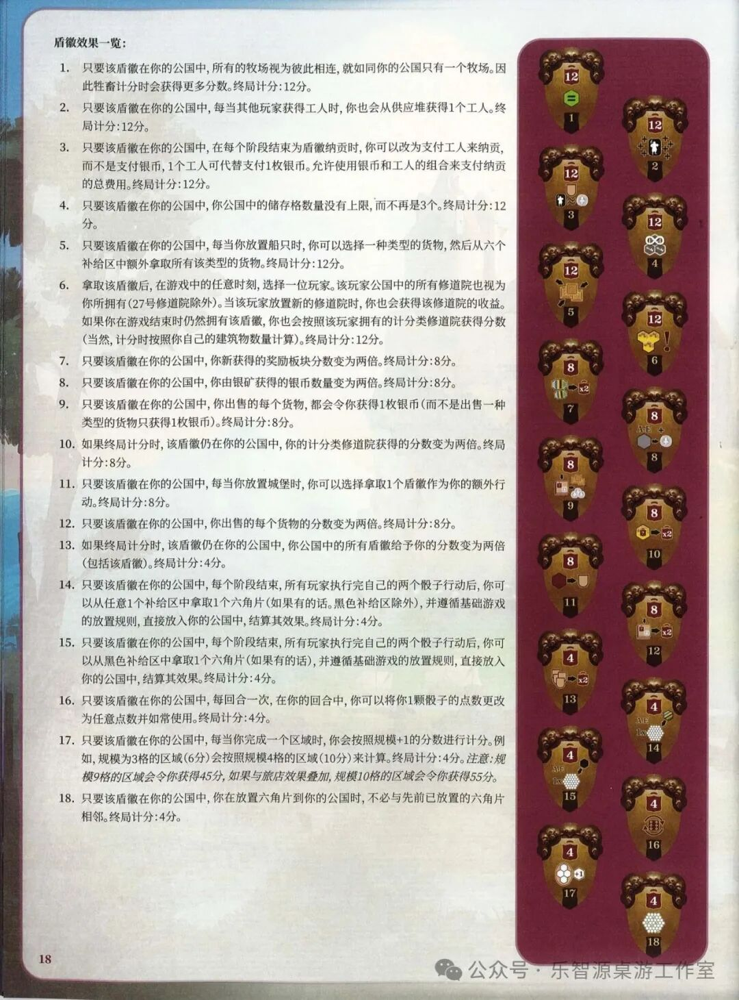
盾徽效果一览
- 只要该盾徽在你的公国中，所有的牧场视为彼此相连，就如同你的公国只有一个牧场。因此牲畜计分时会获得更多分数。终局计分：12 分。
- 只要该盾徽在你的公国中，每当其他玩家获得工人时，你也会从供应堆获得 1 个工人。终局计分：12 分。
- 只要该盾徽在你的公国中，在每个阶段结束为盾徽纳贡时，你可以改为支付工人来纳贡，而不是支付银币，1 个工人可代替支付 1 枚银币。允许使用银币和工人的组合来支付纳贡的总费用。终局计分：12 分。
- 只要该盾徽在你的公国中，你公国中的储存格数量没有上限，而不再是 3 个。终局计分：12 分。
- 只要该盾徽在你的公国中，每当你放置船只时，你可以选择一种类型的货物，然后从六个补给区中额外拿取所有该类型的货物。终局计分：12 分。
- 拿取该盾徽后，在游戏中的任意时刻，选择一位玩家。该玩家公国中的所有修道院也视为你所拥有（27 号修道院除外）。当该玩家放置新的修道院时，你也会获得该修道院的收益。如果你在游戏结束时仍然拥有该盾徽，你也会依照该玩家拥有的计分类修道院获得分数（当然，计分时按照你自己的建筑物数量计算）。终局计分：12 分。
- 只要该盾徽在你的公国中，你新获得的奖励板块分数变为两倍。终局计分：8 分。
- 只要该盾徽在你的公国中，你由银矿获得的银币数量变为两倍。终局计分：8 分。
- 只要该盾徽在你的公国中，你出售的每个货物，都会令你获得 1 枚银币（而不是出售一种类型的货物只获得 1 枚银币）。终局计分：8 分。
- 如果终局计分时，该盾徽仍在你的公国中，你的计分类修道院获得的分数变为两倍。终局计分：8 分。
- 只要该盾徽在你的公国中，每当你放置城堡时，你可以选择拿取 1 个盾徽作为你的额外行动。终局计分：8 分。
- 只要该盾徽在你的公国中，你出售的每个货物的分数变为两倍。终局计分：8 分。
- 如果终局计分时，该盾徽仍在你的公国中，你公国中的所有盾徽给予你的分数变为两倍（包括该盾徽）。终局计分：4 分。
- 只要该盾徽在你的公国中，每个阶段结束，所有玩家执行完自己的两个骰子行动后，你可以从任意 1 个补给区中拿取 1 个六角片（如果有的话。黑色补给区除外），并遵循基础游戏的放置规则，直接放入你的公国中，结算其效果。终局计分：4 分。
- 只要该盾徽在你的公国中，每个阶段结束，所有玩家执行完自己的两个骰子行动后，你可以从黑色补给区中拿取 1 个六角片（如果有的话），并遵循基础游戏的放置规则，直接放入你的公国中，结算其效果。终局计分：4 分。
- 只要该盾徽在你的公国中，每回合一次，在你的回合中，你可以将你 1 颗骰子的点数更改为任意点数并如常使用。终局计分：4 分。
- 只要该盾徽在你的公国中，每当你完成一个区域时，你会按照规模 +1 的分数进行计分。例如，规模为 3 格的区域（6 分）会按照规模 4 格的区域（10 分）来计算。终局计分：4 分。注意：规模 9 格的区域会令你获得 45 分，如果与旅店效果叠加，规模 10 格的区域会令你获得 55 分。
- 只要该盾徽在你的公国中，你在放置六角片到你的公国时，不必与先前已放置的六角片相邻。终局计分：4 分。
葡萄园扩展
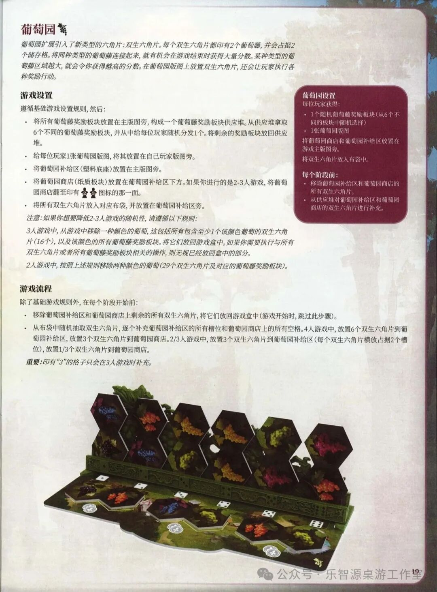
葡萄园扩展引入了新类型的六角片：双生六角片。每个双生六角片都印有 2 个葡萄藤，并会占据 2 个储存格。将同种类型的葡萄藤连接起来，就有机会在游戏结束时获得大量分数。某种类型的葡萄藤区域越大，就会令你获得越高的分数。在葡萄园版图上放置双生六角片，还会让玩家执行各种游戏行动。
游戏设置
遵循基础游戏设置规则，然后：
- 将所有葡萄藤奖励板块放置在主版图旁，构成一个葡萄藤奖励板块供应堆。从供应堆拿取 6 个不同的葡萄藤奖励板块，并从中给每位玩家随机分发 1 个。将剩余的奖励板块放回供应堆。
- 给每位玩家 1 张葡萄园版图，将其放置在自己玩家版图旁。
- 将葡萄园补给区（塑料底座）放置在主版图旁。
- 将葡萄园商店（纸板板块）放置在葡萄园补给区下方。如果你进行的是 2-3 人游戏，将葡萄园商店翻至印有工人图标的那一面。
- 将所有双生六角片放入对应布袋，并放置在葡萄园补给区旁。
注意：如果你想要降低 2-3 人游戏的随机性，请遵循以下规则：3 人游戏中，从游戏中移除一种颜色的葡萄，这包括所有包含至少 1 个该颜色葡萄的双生六角片（16 个），以及该颜色的所有葡萄藤奖励板块。将它们放回游戏盒中。如果你需要执行与所有双生六角片或者所有葡萄藤奖励板块相关的操作，则无视已经放回盒中的部分。2 人游戏中，按照上述规则移除两种颜色的葡萄（29 个双生六角片及对应的葡萄藤奖励板块）。
游戏流程
除了基础游戏规则外，在每个阶段开始前：
- 移除葡萄园补给区和葡萄园商店上剩余的所有双生六角片，将它们放回游戏盒中（游戏开始时，跳过此步骤）。
- 从布袋中随机抽取双生六角片，逐个补充葡萄园补给区的所有槽位和葡萄园商店上的所有空格。4 人游戏中，放置 6 个双生六角片到葡萄园补给区，放置 3 个双生六角片到葡萄园商店。2/3 人游戏中，放置 3 个双生六角片到葡萄园补给区（每个双生六角片横放占据 2 个槽位），放置 1/3 个双生六角片到葡萄园商店。
重要：印有「3」的格子只会在 3 人游戏时补充。
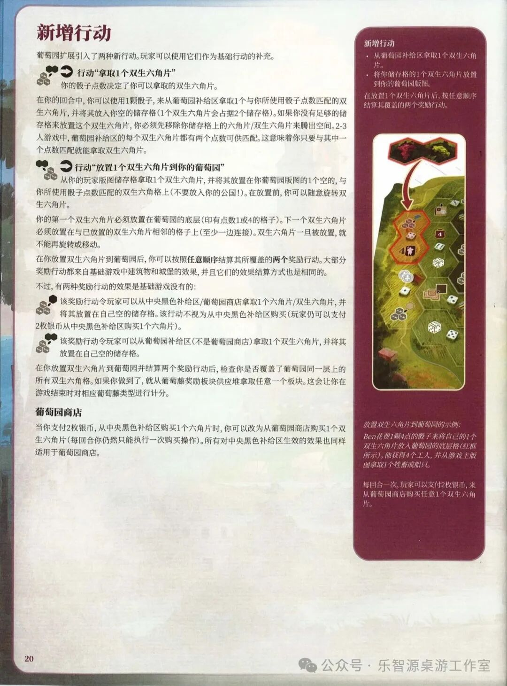
新增行动
葡萄园扩展引入了两种新行动。玩家可以使用它们作为基础行动的补充。
行动「拿取 1 个双生六角片」：你的骰子点数决定了你可以拿取的双生六角片。在你的回合中，你可以使用 1 颗骰子，来从葡萄园补给区拿取 1 个与你所使用骰子点数匹配的双生六角片，并将其放入你空的储存格（1 个双生六角片会占据 2 个储存格）。如果你没有足够的储存格来放置这个双生六角片，你必须先移除你储存格上的六角片/双生六角片来腾出空间。2-3 人游戏中，葡萄园补给区的每个双生六角片都有两个点数可供匹配。这意味着你只要与其中一个点数匹配就能拿取双生六角片。
行动「放置 1 个双生六角片到你的葡萄园」：从你的玩家版图储存格拿取 1 个双生六角片，并将其放置在你葡萄园版图的 1 个空的、与你所使用骰子点数匹配的双生六角格上（不要放入你的公国！）。在放置前，你可以随意旋转双生六角片。
你的第一个双生六角片必须放置在葡萄园的底层（印有点数 1 或 4 的格子）。下一个双生六角片必须放置在与已放置的双生六角片相邻的格子上（至少一边连接）。双生六角片一旦被放置，就不能再旋转或移动。
在你放置双生六角片到葡萄园后，你可以按照任意顺序结算其所覆盖的两个奖励行动。大部分奖励行动都来自基础游戏中建筑物和城堡的效果，并且它们的效果结算方式也是相同的。不过，有两种奖励行动的效果是基础游戏没有的：
- 该奖励行动令玩家可以从中央黑色补给区/葡萄园商店拿取 1 个六角片/双生六角片，并将其放置在自己空的储存格。该行动不视为从中央黑色补给区购买（玩家仍可以支付 2 枚银币从中央黑色补给区购买 1 个六角片）。
- 该奖励行动令玩家可以从葡萄园补给区（不是葡萄园商店）拿取 1 个双生六角片，并将其放置在自己空的储存格。
在你放置双生六角片到葡萄园并结算两个奖励行动后，检查你是否覆盖了葡萄园同一层上的所有双生六角格。如果你做到了，就从葡萄藤奖励板块供应堆拿取任意一个板块。这会让你在游戏结束时对相应葡萄藤类型进行计分。
示例：Ben 花费 1 颗 4 点的骰子来将自己的 1 个双生六角片放入葡萄园的底层格。他获得 4 个工人，并从游戏主版图拿取 1 个牲畜或船只。
葡萄园商店
当你支付 2 枚银币，从中央黑色补给区购买 1 个六角片时，你可以改为从葡萄园商店购买 1 个双生六角片（每回合你仍然只能执行一次购买操作）。所有对中央黑色补给区生效的效果也同样适用于葡萄园商店。
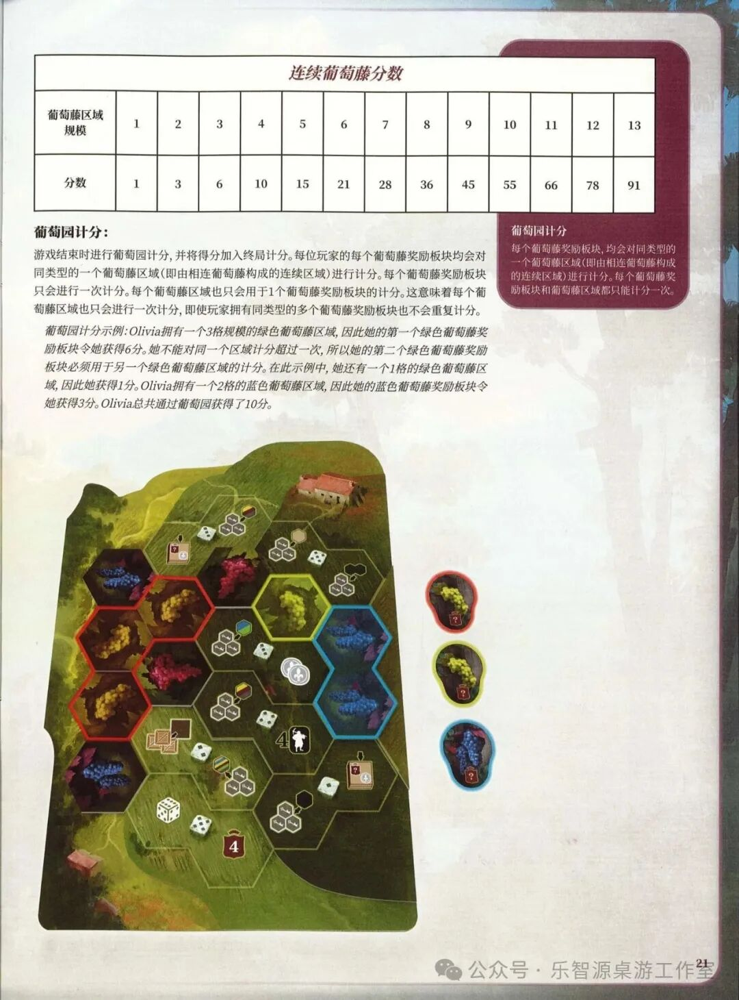
连续葡萄藤分数
| 葡萄藤区域规模 | 1 | 2 | 3 | 4 | 5 | 6 | 7 | 8 | 9 | 10 | 11 | 12 | 13 |
|---|---|---|---|---|---|---|---|---|---|---|---|---|---|
| 分数 | 1 | 3 | 6 | 10 | 15 | 21 | 28 | 36 | 45 | 55 | 66 | 78 | 91 |
葡萄园计分
游戏结束时进行葡萄园计分，并将得分加入终局计分。每位玩家的每个葡萄藤奖励板块均会对同类型的一个葡萄藤区域（即由相连葡萄藤构成的连续区域）进行计分。每个葡萄藤奖励板块只会进行一次计分。每个葡萄藤区域也只会用于 1 个葡萄藤奖励板块的计分。这意味着每个葡萄藤区域也只会进行一次计分，即使玩家拥有同类型的多个葡萄藤奖励板块也不会重复计分。
葡萄园计分示例：Olivia 拥有一个 3 格规模的绿色葡萄藤区域，因此她的第一个绿色葡萄藤奖励板块令她获得 6 分。她不能对同一个区域计分超过一次，所以她的第二个绿色葡萄藤奖励板块必须用于另一个绿色葡萄藤区域的计分。在此示例中，她还有一个 1 格的绿色葡萄藤区域，因此她获得 1 分。Olivia 拥有一个 2 格的蓝色葡萄藤区域，因此她的蓝色葡萄藤奖励板块令她获得 3 分。Olivia 总共通过葡萄园获得了 10 分。
自动机模式
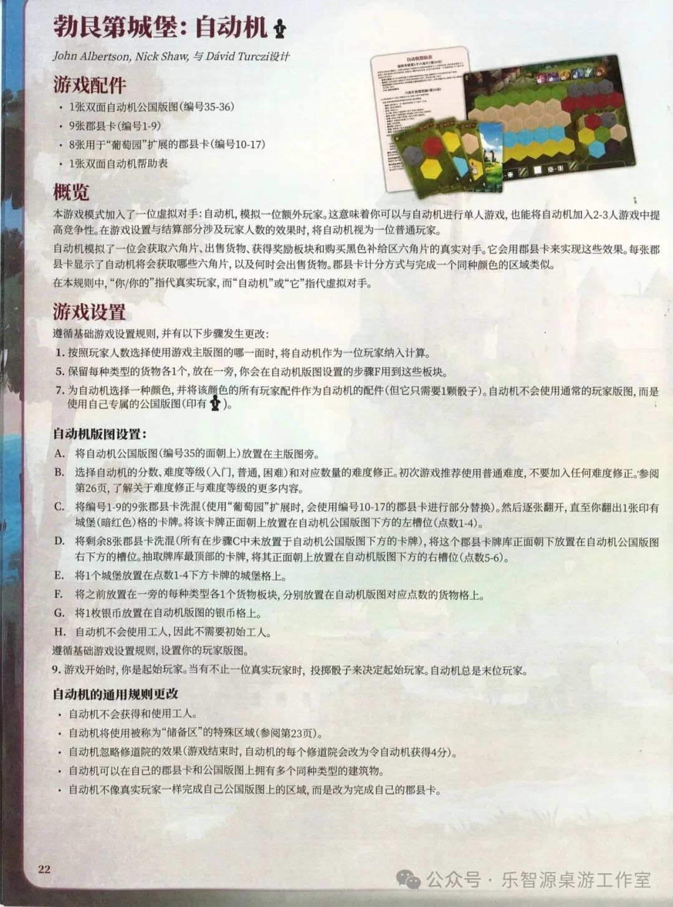
勃艮第城堡：自动机（John Albertson, Nick Shaw, 与 Dávid Turczi 设计）
游戏配件
- 1 张双面自动机公国版图（编号 35-36）
- 9 张郡县卡（编号 1-9）
- 8 张用于「葡萄园」扩展的郡县卡（编号 10-17）
- 1 张双面自动机帮助表
概览
本游戏模式加入了一位虚拟对手：自动机，模拟一位额外玩家。这意味着你可以与自动机进行单人游戏，也能将自动机加入 2-3 人游戏中提高竞争性。在游戏设置与结算部分涉及玩家人数的效果时，将自动机视为一位普通玩家。
自动机模拟了一位会获取六角片、出售货物、获得奖励板块和购买黑色补给区六角片的真实对手。它会用郡县卡来实现这些效果。每张郡县卡显示了自动机将会获取哪些六角片，以及何时会出售货物。郡县卡计分方式与完成一个同种颜色的区域类似。
在本规则中，「你/你的」指代真实玩家，而「自动机」或「它」指代虚拟对手。
游戏设置
遵循基础游戏设置规则，并有以下步骤发生更改：
- 步骤 1：按照玩家人数选择使用游戏主版图的哪一面时，将自动机作为一位玩家纳入计算。
- 步骤 5：保留每种类型的货物各 1 个，放在一旁，你会在自动机版图设置的步骤 F 用到这些板块。
- 步骤 7：为自动机选择一种颜色，并将该颜色的所有玩家配件作为自动机的配件（但它只需要 1 颗骰子）。自动机不会使用通常的玩家版图，而是使用自己专属的公国版图（印有盾徽图标）。
自动机版图设置：
- A. 将自动机公国版图（编号 35 的面朝上）放置在主版图旁。
- B. 选择自动机的分数、难度等级（入门，普通，困难）和对应数量的难度修正。初次游戏推荐使用普通难度，不要加入任何难度修正。参阅第 26 页，了解关于难度修正与难度等级的更多内容。
- C. 将编号 1-9 的 9 张郡县卡洗混（使用「葡萄园」扩展时，会使用编号 10-17 的郡县卡进行部分替换）。然后逐张翻开，直至你翻出 1 张印有城堡（暗红色）格的卡牌。将该卡牌正面朝上放置在自动机公国版图下方的左槽位（点数 1-4）。
- D. 将剩余 8 张郡县卡洗混（所有在步骤 C 中未放置于自动机公国版图下方的卡牌），将这个郡县卡牌库正面朝下放置在自动机公国版图右下方的槽位。抽取牌库最顶部的卡牌，将其正面朝上放置在自动机版图下方的右槽位（点数 5-6）。
- E. 将 1 个城堡放置在点数 1-4 下方卡牌的城堡格上。
- F. 将之前放置在一旁的每种类型各 1 个货物板块，分别放置在自动机版图对应点数的货物格上。
- G. 将 1 枚银币放置在自动机版图的银币格上。
- H. 自动机不会使用工人，因此不需要初始工人。
遵循基础游戏设置规则，设置你的玩家版图。
步骤 9：游戏开始时，你是起始玩家。当有不止一位真实玩家时，投掷骰子来决定起始玩家。自动机总是末位玩家。
自动机的通用规则更改
- 自动机不会获得和使用工人。
- 自动机将使用被称为「储备区」的特殊区域（参阅第 23 页）。
- 自动机忽略修道院的效果（游戏结束时，自动机的每个修道院会改为令自动机获得 4 分）。
- 自动机可以在自己的郡县卡和公国版图上拥有多个同种类型的建筑物。
- 自动机不像真实玩家一样完成自己公国版图上的区域，而是改为完成自己的郡县卡。
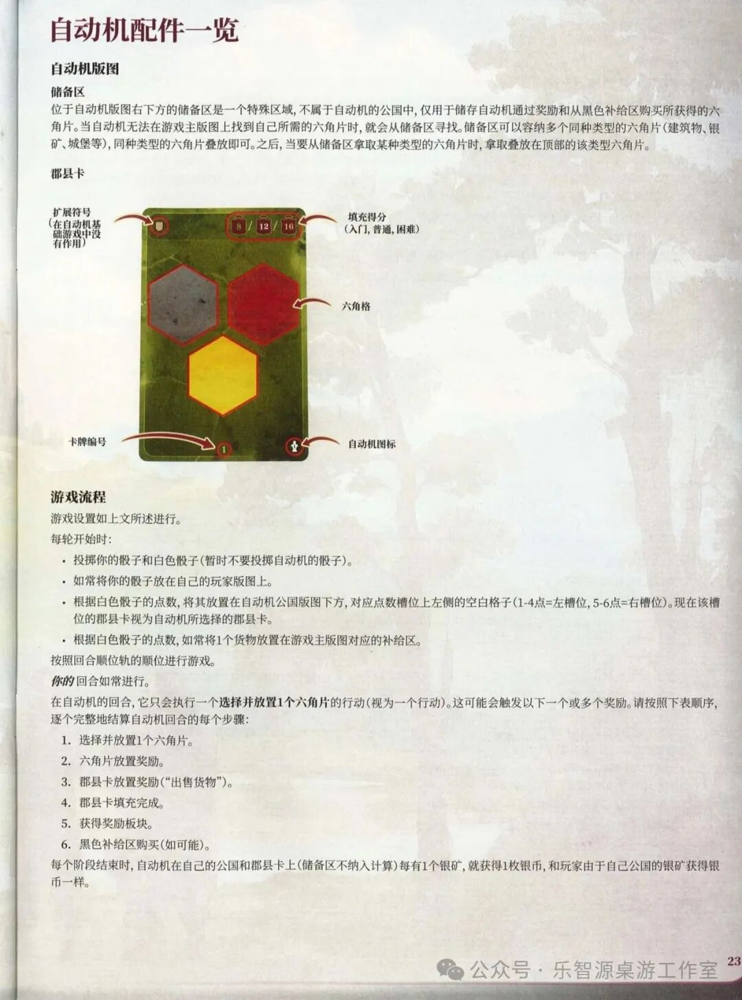
自动机版图
储备区：位于自动机版图右下方的储备区是一个特殊区域，不属于自动机的公国，仅用于储存自动机通过奖励和从黑色补给区购买所获得的六角片。当自动机无法在游戏主版图上找到自己所需的六角片时，就会从储备区寻找。储备区可以容纳多个同种类型的六角片（建筑物、银矿、城堡等），同种类型的六角片叠放即可。之后，当要从储备区拿取某种类型的六角片时，拿取叠放在顶部的该类型六角片。
郡县卡：每张郡县卡上有若干六角格，卡牌顶部印有填充得分（入门/普通/困难三个等级），左下角为卡牌编号，右上角可能印有扩展符号（在自动机基础游戏中没有作用）。
游戏流程
游戏设置如上文所述进行。每轮开始时：
- 投掷你的骰子和白色骰子（暂时不要投掷自动机的骰子）。
- 如常将你的骰子放在自己的玩家版图上。
- 根据白色骰子的点数，将其放置在自动机公国版图下方，对应点数槽位上左侧的空白格子（1-4 点=左槽位，5-6 点=右槽位）。现在该槽位的郡县卡视为自动机所选择的郡县卡。
- 根据白色骰子的点数，如常将 1 个货物放置在游戏主版图对应的补给区。
按照回合顺位轨的顺位进行游戏。你的回合如常进行。
在自动机的回合，它只会执行一个选择并放置 1 个六角片的行动（视为一个行动）。这可能会触发以下一个或多个奖励。请按照下表顺序，逐个完整地结算自动机回合的每个步骤：
- 选择并放置 1 个六角片。
- 六角片放置奖励。
- 郡县卡放置奖励（「出售货物」）。
- 郡县卡填充完成。
- 获得奖励板块。
- 黑色补给区购买（如可能）。
每个阶段结束时，自动机在自己的公国和郡县卡上（储备区不纳入计算）每有 1 个银矿，就获得 1 枚银币，和玩家由于自己公国的银矿获得银币一样。
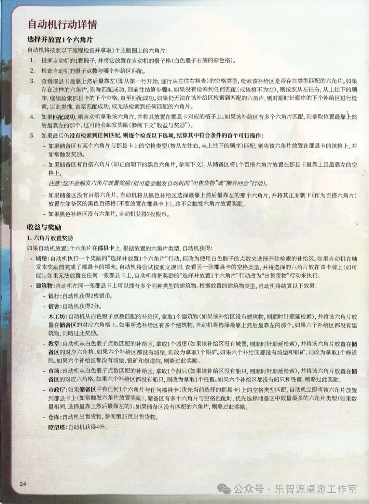
选择并放置 1 个六角片
自动机将按照以下流程检查并拿取 1 个主版图上的六角片：
- 投掷自动机的 1 颗骰子，并将它放置在自动机的骰子格（白色骰子右侧的彩色格）。
- 检查自动机的骰子点数与哪个补给区匹配。
- 查看郡县卡最上然后最左（即从第一行开始，逐行从左往右检查）的空格类型，检索该补给区是否存在类型匹配的六角片。如果存在这样的六角片，则称匹配成功，则前往结算步骤 4。如果没有检索到任何匹配（或该格不为空），则按照从左往右、从上往下的顺序，继续检索郡县卡的下一个空格，直至匹配成功。如果仍无法在该补给区检索到匹配的六角片，则对顺时针顺序的下个补给区进行检索，以此类推，直至匹配成功，或无法检索到任何匹配的六角片。
- 如果匹配成功，则自动机拿取该六角片，并将其放置在郡县对应的格子上。如果该补给区有多个六角片匹配，则拿取位置最上然后最左的那个。这可能会触发奖励（参阅下文「收益与奖励」）。
- 如果最后仍没有检索到任何匹配，则逐个检查以下选项，结算其中符合条件的首个可行操作：
- 如果储备区有某个六角片与郡县卡上的空格类型（按从左往右，从上往下的顺序）匹配，则将该六角片放置在郡县卡的该格上，并如常触发奖励。
- 如果储备区有百搭六角片（即正面朝下的黑色六角片，参阅下文），从储备区将 1 个百搭六角片放置在郡县卡最靠上且最靠左的空格上。注意：这不会触发六角片放置奖励（但可能会触发自动机的「出售货物」或「额外回合」行动）。
- 如果储备区没有百搭六角片，自动机将从黑色补给区选择最靠上然后最靠左的那个六角片，并将其正面朝下（作为百搭六角片）放置在储备区的黑色百搭格（不要放置在郡县卡上）。这不会触发六角片放置奖励。
- 如果黑色补给区没有六角片，自动机获得 2 枚银币。
收益与奖励
1. 六角片放置奖励
如果自动机放置 1 个六角片在郡县卡上，根据放置的六角片类型，自动机获得：
- 城堡：自动机执行一个奖励的「选择并放置 1 个六角片」行动，但改为使用白色骰子的点数来选择开始检索的补给区。如果自动机在触发本奖励前完成了郡县卡的填充，自动机将尝试按前文规则，查看另一张郡县卡的空格类型，并将选择的六角片放在该卡牌上（如可能）。如果无法放置在任何一张郡县卡上，自动机将把奖励的「选择并放置 1 个六角片」行动改为「出售货物」行动来执行。
- 建筑物：自动机在同一张郡县卡上可以拥有多个同种类型的建筑物。根据放置的建筑物类型，自动机将结算以下效果：
- 银行：自动机获得 2 枚银币。
- 宿舍：自动机获得 2 分。
- 木工坊：自动机从白色骰子点数匹配的补给区，拿取 1 个建筑物（如果该补给区没有建筑物，则顺时针顺延检索），并将该六角片放置在储备区的对应六角格上。如果所选补给区有多个建筑物，自动机将选择最靠上然后最靠左的那个。如果六个补给区都没有建筑物，则略过此奖励。
- 教堂：自动机从白色骰子点数匹配的补给区，拿取 1 个城堡（如果该补给区没有城堡，则顺时针顺延检索），并将该六角片放置在储备区的对应六角格。如果六个补给区都没有城堡，则改为拿取 1 个银矿。如果六个补给区都没有城堡和银矿，则改为拿取 1 个修道院。如果六个补给区都没有城堡、银矿和修道院，则略过此奖励。
- 市场：自动机从白色骰子点数匹配的补给区，拿取 1 个船只（如果该补给区没有船只，则顺时针顺延检索），并将该六角片放置在储备区的对应六角格。如果六个补给区都没有船只，则改为拿取 1 个牲畜。如果六个补给区都没有船只和牲畜，则略过此奖励。
- 市政厅：如果储备区中有任何一个六角片与任何郡县卡（优先当前选择的郡县卡）上的空格类型匹配，自动机立即将该六角片放置到郡县卡上（如常触发六角片放置奖励）。储备区有多个六角片与空格匹配时，优先选择储备区中数量最多的六角片类型（如果数量相同，选择最靠上然后最靠左的）。如果储备区没有匹配的六角片，则略过此奖励。
- 仓库：自动机出售货物，参阅第 25 页出售货物。
- 瞭望塔：自动机获得 4 分。
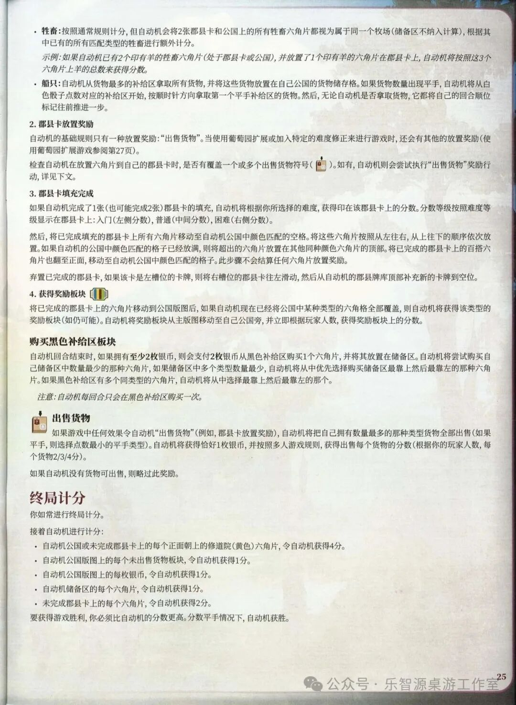
- 牲畜：按照通常规则计分，但自动机会将 2 张郡县卡和公国上的所有牲畜六角片都视为属于同一个牧场（储备区不纳入计算），根据其中已有的所有匹配类型的牲畜进行额外计分。示例：如果自动机已有 2 个印有羊的牲畜六角片（处于郡县卡或公国），并放置了 1 个印有羊的六角片在郡县卡上，自动机将按照这 3 个六角片上羊的总数来获得分数。
- 船只：自动机从货物最多的补给区拿取所有货物，并将这些货物放置在自己公国的货物储存格。如果货物数量出现平手，自动机将从白色骰子点数对应的补给区开始，按顺时针方向拿取第一个平手补给区的货物。然后，无论自动机是否拿取货物，它都将自己的回合顺位标记往前推进一步。
2. 郡县卡放置奖励
自动机的基础规则只有一种放置奖励：「出售货物」。当使用葡萄园扩展或加入特定的难度修正来进行游戏时，还会有其他的放置奖励（使用葡萄园扩展游戏参阅第 27 页）。
检查自动机在放置六角片到自己的郡县卡时，是否有覆盖一个或多个出售货物符号。如有，自动机则会尝试执行「出售货物」奖励行动，详见下文。
3. 郡县卡填充完成
如果自动机完成了 1 张（也可能完成 2 张）郡县卡的填充，自动机将根据你所选择的难度，获得印在该郡县卡上的分数。分数等级按照难度等级显示在郡县卡上：入门（左侧分数），普通（中间分数），困难（右侧分数）。
然后，将已完成填充的郡县卡上所有六角片移动至自动机公国中颜色匹配的空格。将这些六角片按照从左往右、从上往下的顺序依次放置。如果自动机的公国中颜色匹配的格子已经放满，则将超出的六角片放置在其他同种颜色六角片的顶部。将已完成的郡县卡上的百搭六角片也翻至正面，移动至自动机公国中颜色匹配的格子。此步骤不会结算任何六角片放置奖励。
弃置已完成的郡县卡。如果该卡是左槽位的卡牌，则将右槽位的郡县卡往左滑动，然后从自动机的郡县牌库顶部补充新的卡牌到空位。
4. 获得奖励板块
将已完成的郡县卡上的六角片移动到公国版图后，如果自动机现在已经将公国中某种类型的六角格全部覆盖，则自动机将获得该类型的奖励板块（如仍可能）。自动机将奖励板块从主版图移动至自己公国旁，并立即根据玩家人数，获得奖励板块上的分数。
购买黑色补给区板块
自动机回合结束时，如果拥有至少 2 枚银币，则会支付2 枚银币从黑色补给区购买 1 个六角片，并将其放置在储备区。自动机将尝试购买自己储备区中数量最少的那种六角片，如果储备区中多个类型数量最少，自动机将从中优先选择购买储备区最靠上然后最靠左的那种六角片。如果黑色补给区有多个同类型的六角片，自动机将从中选择最靠上然后最靠左的那个。
注意：自动机每回合只会在黑色补给区购买一次。
出售货物
如果游戏中任何效果令自动机「出售货物」（例如，郡县卡放置奖励），自动机将把自己拥有数量最多的那种类型货物全部出售（如果平手，则选择点数最小的平手类型）。自动机将获得恰好 1 枚银币，并按照多人游戏规则，获得出售每个货物的分数（根据你的玩家人数，每个货物 2/3/4 分）。
如果自动机没有货物可出售，则略过此奖励。
终局计分
你如常进行终局计分。接着自动机进行计分：
- 自动机公国或未完成郡县卡上的每个正面朝上的修道院（黄色）六角片，令自动机获得 4 分。
- 自动机公国版图上的每个未出售货物板块，令自动机获得 1 分。
- 自动机公国版图上的每枚银币，令自动机获得 1 分。
- 自动机储备区的每个六角片，令自动机获得 1 分。
- 未完成郡县卡上的每个六角片，令自动机获得 2 分。
要获得游戏胜利，你必须比自动机的分数更高。分数平手情况下，自动机获胜。
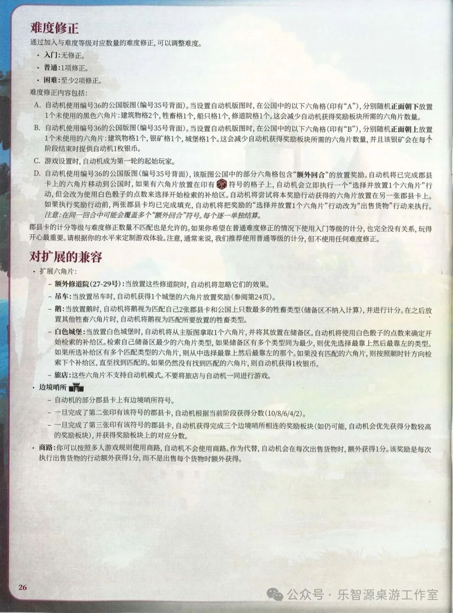
难度修正
通过与难度等级对应数量的难度修正，可以调整难度。
- 入门：无修正。
- 普通：1 项修正。
- 困难：至少 2 项修正。
难度修正内容包括：
- A. 自动机使用编号 36 的公国版图（编号 35 号背面）。当设置自动机版图时，在公国中的以下六角格（印有「A」），分别随机正面朝下放置 1 个未使用的黑色六角片：建筑物格 2 个，牲畜格 1 个，船只格 1 个，修道院格 1 个。这会减少自动机获得奖励板块所需的六角片数量。
- B. 自动机使用编号 36 的公国版图（编号 35 号背面）。当设置自动机版图时，在公国中的以下六角格（印有「B」），分别随机正面朝上放置 1 个未使用的六角片：建筑物格 1 个，银矿格 1 个，城堡格 1 个。这会减少自动机获得奖励板块所需的六角片数量，并且该银矿会在每个阶段结束时提供自动机 1 枚银币。
- C. 游戏设置时，自动机成为第一轮的起始玩家。
- D. 自动机使用编号 36 的公国版图（编号 35 号背面）。该版图公国中的部分六角格包含「额外回合」的放置奖励。自动机将已完成郡县卡上的六角片移动到公国时，如果有六角片放置在印有骰子符号的格子上，自动机会立即执行一个「选择并放置 1 个六角片」行动，但会改为使用白色骰子的点数来选择开始检索的补给区。自动机将尝试将本奖励行动获得的六角片放置在另一张郡县卡上。如果执行奖励行动前，两张郡县卡均已完成填充，自动机将把奖励的「选择并放置 1 个六角片」行动改为「出售货物」行动来执行。注意：在同一回合中可能会覆盖多个「额外回合」符号。每个逐一单独结算。
郡县卡的计分等级与难度修正数量不匹配也是允许的。如果你希望在普通难度修正的情况下使用入门等级的计分，也完全没有关系，玩得开心最重要。请根据你的水平来定制游戏体验。注意，通常来说，我们推荐使用普通等级的计分，但不使用任何难度修正。
对扩展的兼容
- 扩展六角片：
- 额外修道院（27-29 号）：当放置这些修道院时，自动机将忽略它们的效果。
- 吊车：当放置吊车时，自动机获得 1 个城堡的六角片放置奖励（参阅第 24 页）。
- 鹅：当放置鹅时，自动机将鹅视为匹配自己 2 张郡县卡和公国上只数最多的牲畜类型（储备区不纳入计算），并进行计分。在之后放置其他牲畜六角片时，自动机将鹅视为匹配所要放置的牲畜类型。
- 白色城堡：当放置白色城堡时，自动机将从主版图拿取 1 个六角片，并将其放置在储备区。自动机将使用白色骰子的点数来确定开始检索的补给区。检索自己储备区最少的六角片类型，如果储备区有多个类型同为最少，则优先选择最靠上然后最靠左的类型。如果所选补给区有多个匹配类型的六角片，则从中选择最靠上然后最靠左的那个。如果没有匹配的六角片，则按照顺时针方向检索下个补给区，直至找到匹配的。如果仍然没有找到匹配的六角片，则自动机获得 1 枚银币。
- 旅店：这些六角片不支持自动机模式。不要将旅店与自动机一同进行游戏。
- 边境哨所：
- 自动机的部分郡县卡上有边境哨所符号。
- 一旦完成了第二张印有该符号的郡县卡，自动机根据当前阶段获得分数（10/8/6/4/2）。
- 一旦完成了第三张印有该符号的郡县卡，自动机获得完成三个边境哨所相连的奖励板块（如仍可能，自动机会优先获得分数较高的奖励板块），并获得奖励板块上的对应分数。
- 商路：你可以按照多人游戏规则使用商路，自动机不会使用商路。作为代替，自动机会在每次出售货物时，额外获得 1 分。该奖励是每次执行出售货物的行动额外获得 1 分，而不是出售每个货物时额外获得。
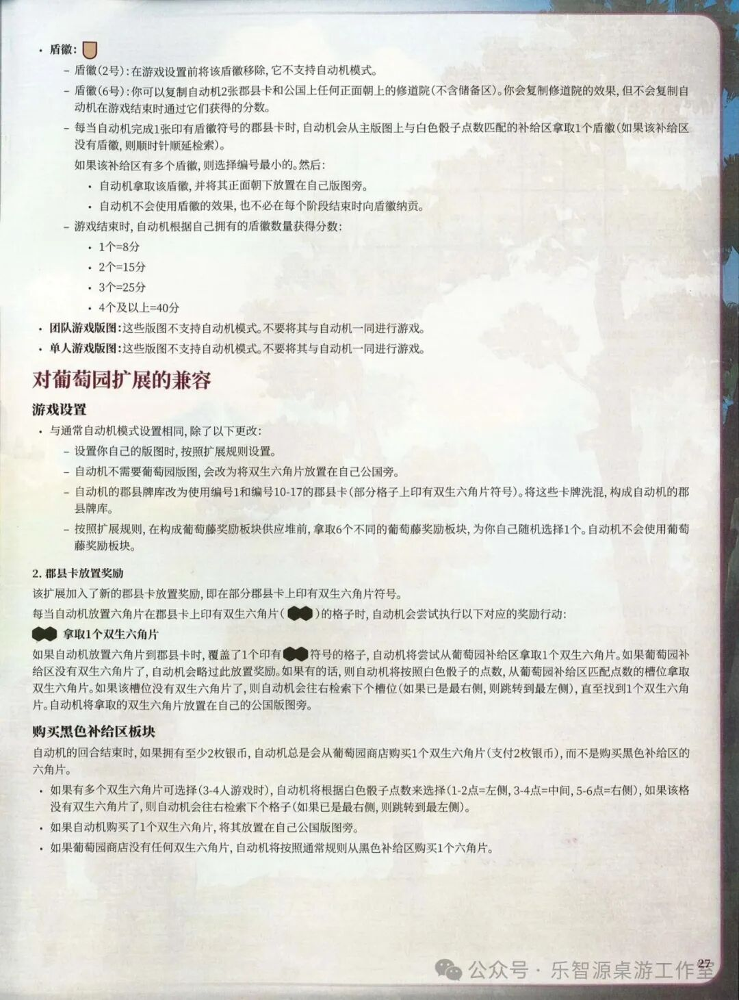
- 盾徽：
- 盾徽（2 号）：在游戏设置前将该盾徽移除，它不支持自动机模式。
- 盾徽（6 号）：你可以复制自动机 2 张郡县卡和公国上任何正面朝上的修道院（不含储备区）。你会复制修道院的效果，但不会复制自动机在游戏结束时通过它们获得的分数。
- 每当自动机完成 1 张印有盾徽符号的郡县卡时，自动机会从主版图上与白色骰子点数匹配的补给区拿取 1 个盾徽（如果该补给区没有盾徽，则顺时针顺延检索）。如果该补给区有多个盾徽，则选择编号最小的。然后：自动机拿取该盾徽，并将其正面朝下放置在自己版图旁；自动机不会使用盾徽的效果，也不必在每个阶段结束时向盾徽纳贡。
- 游戏结束时，自动机根据自己拥有的盾徽数量获得分数：1 个=8 分；2 个=15 分；3 个=25 分；4 个及以上=40 分。
- 团队游戏版图：这些版图不支持自动机模式。不要将其与自动机一同进行游戏。
- 单人游戏版图：这些版图不支持自动机模式。不要将其与自动机一同进行游戏。
对葡萄园扩展的兼容
游戏设置
与通常自动机模式设置相同，除了以下更改：
- 设置你自己的版图时，按照扩展规则设置。
- 自动机不需要葡萄园版图，会改为将双生六角片放置在自己公国旁。
- 自动机的郡县牌库改为使用编号 1 和编号 10-17 的郡县卡（部分格子上印有双生六角片符号）。将这些卡牌洗混，构成自动机的郡县牌库。
- 按照扩展规则，在构成葡萄藤奖励板块供应堆前，拿取 6 个不同的葡萄藤奖励板块，为你自己随机选择 1 个。自动机不会使用葡萄藤奖励板块。
郡县卡放置奖励
该扩展加入了新的郡县卡放置奖励，即在部分郡县卡上印有双生六角片符号。
拿取 1 个双生六角片：每当自动机放置六角片到郡县卡时，如果覆盖了 1 个印有双生六角片符号的格子，自动机将尝试从葡萄园补给区拿取 1 个双生六角片。如果葡萄园补给区没有双生六角片了，自动机会略过此放置奖励。如果有的话，则自动机将按照白色骰子的点数，从葡萄园补给区匹配点数的槽位拿取双生六角片。如果该槽位没有双生六角片了，则自动机会往右检索下个槽位（如果已是最右侧，则跳转到最左侧），直至找到 1 个双生六角片。自动机将拿取的双生六角片放置在自己的公国版图旁。
购买黑色补给区板块
自动机的回合结束时，如果拥有至少 2 枚银币，自动机总是会从葡萄园商店购买 1 个双生六角片（支付 2 枚银币），而不是购买黑色补给区的六角片。
- 如果有多个双生六角片可选择（3-4 人游戏时），自动机将根据白色骰子点数来选择（1-2 点=左侧，3-4 点=中间，5-6 点=右侧），如果该格没有双生六角片了，则自动机会往右检索下个格子（如果已是最右侧，则跳转到最左侧）。
- 如果自动机购买了 1 个双生六角片，将其放置在自己公国版图旁。
- 如果葡萄园商店没有任何双生六角片，自动机将按照通常规则从黑色补给区购买 1 个六角片。
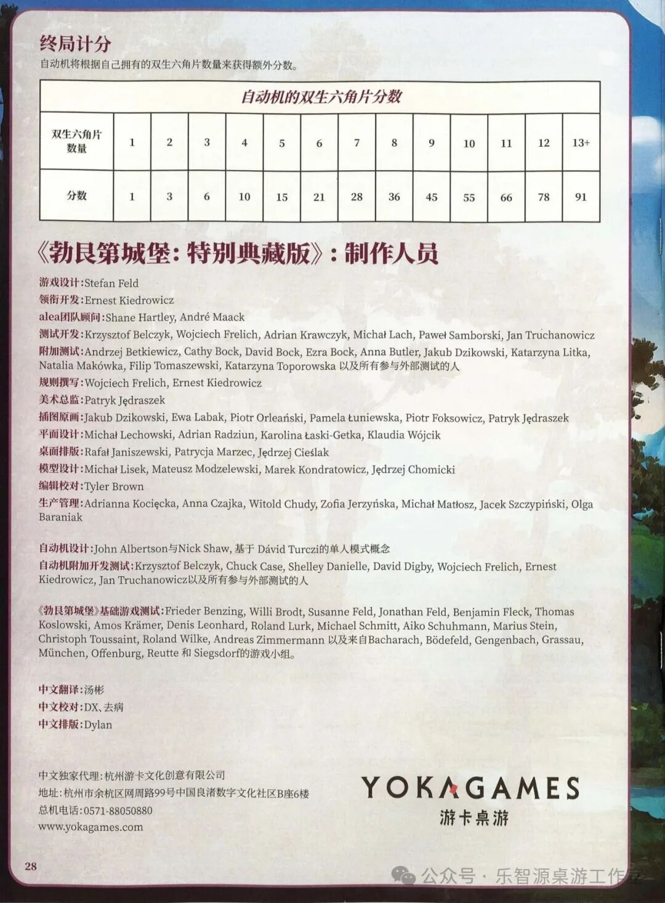
自动机的双生六角片分数
终局计分时，自动机将根据自己拥有的双生六角片数量来获得额外分数。
| 双生六角片数量 | 1 | 2 | 3 | 4 | 5 | 6 | 7 | 8 | 9 | 10 | 11 | 12 | 13+ |
|---|---|---|---|---|---|---|---|---|---|---|---|---|---|
| 分数 | 1 | 3 | 6 | 10 | 15 | 21 | 28 | 36 | 45 | 55 | 66 | 78 | 91 |
帮助表
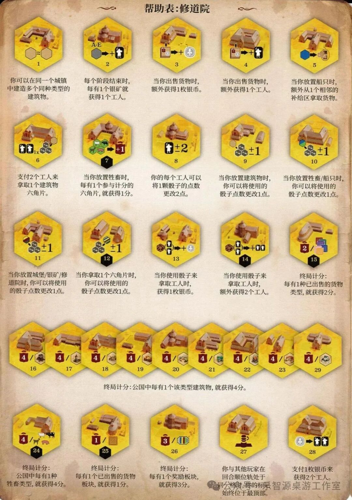
修道院效果一览
| 编号 | 效果 |
|---|---|
| 1 | 你可以在同一个城镇中建造多个同种类型的建筑物。 |
| 2（A-E） | 每个阶段结束时，每有 1 个银矿就获得 1 个工人。 |
| 3 | 当你出售货物时，额外获得 1 枚银币。 |
| 4 | 当你出售货物时，额外获得 1 个工人。 |
| 5 | 当你放置船只时，额外从 1 个相邻的补给区拿取货物。 |
| 6 | 支付 2 个工人来拿取 1 个建筑物六角片。 |
| 7 | 当你放置牲畜时，每有 1 个参与计分的六角片，就获得 1 分。 |
| 8 | 你的每个工人可以将 1 颗骰子的点数更改 2 点。 |
| 9 | 当你放置建筑物时，你可以将使用的骰子点数更改 1 点。 |
| 10 | 当你放置牲畜/船只时，你可以将使用的骰子点数更改 1 点。 |
| 11 | 当你放置城堡/银矿/修道院时，你可以将使用的骰子点数更改 1 点。 |
| 12 | 当你拿取 1 个六角片时，你可以将使用的骰子点数更改 1 点。 |
| 13 | 当你使用骰子来拿取工人时，获得 1 枚银币。 |
| 14 | 当你使用骰子来拿取工人时，额外获得 2 个工人。 |
| 15 | 终局计分：每有 1 种已出售的货物类型，就获得 2 分。 |
| 16-23、29 | 终局计分：公国中每有 1 个该类型建筑物，就获得 4 分。 |
| 24 | 终局计分：公国中每有 1 种牲畜类型，就获得 4 分。 |
| 25 | 终局计分：每有 1 个已出售的货物板块，就获得 1 分。 |
| 26 | 终局计分：每有 1 个奖励板块，就获得 3 分。 |
| 27 | 你与其他玩家在回合顺位轨上处于同一格时，你的标记始终位于最顶部。 |
| 28 | 支付 1 枚银币来获得 2 个工人。 |
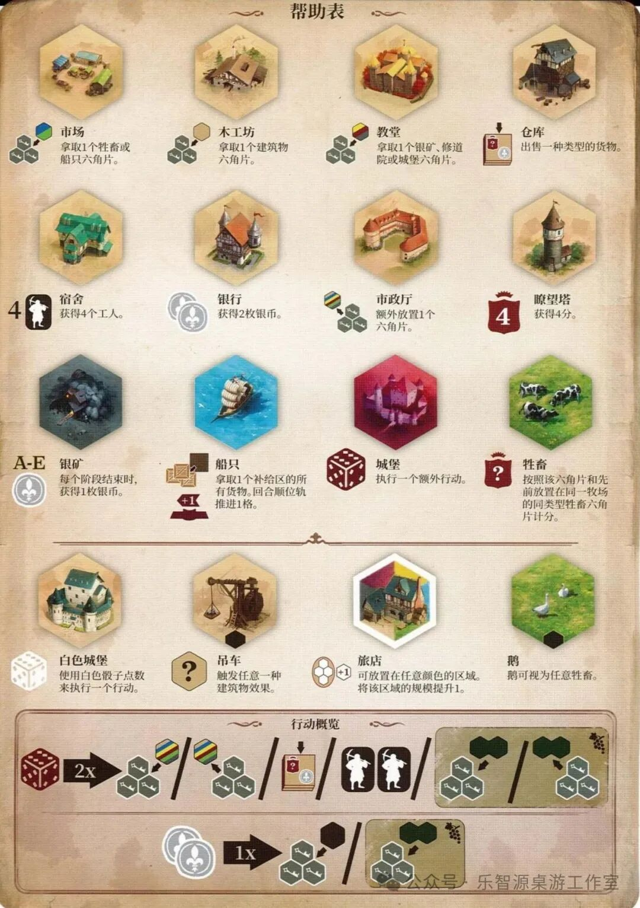
六角片效果速览
- 市场：拿取 1 个牲畜或船只六角片。
- 木工坊：拿取 1 个建筑物六角片。
- 教堂：拿取 1 个银矿、修道院或城堡六角片。
- 仓库：出售一种类型的货物。
- 宿舍：获得 4 个工人。
- 银行：获得 2 枚银币。
- 市政厅：额外放置 1 个六角片。
- 瞭望塔：获得 4 分。
- 银矿：每个阶段结束时，获得 1 枚银币。
- 船只：拿取 1 个补给区的所有货物，回合顺位轨推进 1 格。
- 城堡：执行一个额外行动。
- 牲畜：按照该六角片和先前放置在同一牧场的同类型牲畜六角片计分。
- 白色城堡：使用白色骰子点数来执行一个行动。
- 吊车：触发任意一种建筑物效果。
- 旅店：可放置在任意颜色的区域，将该区域的规模提升 1。
- 鹅：鹅可视为任意牲畜。
制作人员
游戏设计：Stefan Feld
领衔开发：Ernest Kiedrowicz
alea 团队顾问：Shane Hartley, André Maack
测试开发：Krzysztof Belczyk, Wojciech Frelich, Adrian Krawczyk, Michał Lach, Paweł Samborski, Jan Truchanowicz
附加测试：Andrzej Betkiewicz, Cathy Bock, David Bock, Ezra Bock, Anna Butler, Jakub Dzikowski, Katarzyna Litka, Natalia Makówka, Filip Tomaszewski, Katarzyna Toporowska 以及所有参与外部测试的人
规则撰写：Wojciech Frelich, Ernest Kiedrowicz
美术总监：Patryk Jędraszek
插画原画：Jakub Dzikowski, Ewa Labak, Piotr Orleański, Pamela Łuniewska, Piotr Foksowicz, Patryk Jędraszek
平面设计：Michał Lechowski, Adrian Radziun, Karolina Łaski-Getka, Klaudia Wójcik
桌面排版：Rafał Janiszewski, Patrycja Marzec, Jędrzej Cieślak
模型设计：Michał Lisek, Mateusz Modzelewski, Marek Kondratowicz, Jędrzej Chomicki
编辑校对：Tyler Brown
生产管理：Adrianna Kociecka, Anna Czajka, Witold Chudy, Zofia Jerzyńska, Michał Matłosz, Jacek Szczypiński, Olga Baraniak
自动机设计：John Albertson 与 Nick Shaw，基于 Dávid Turczi 的单人模式概念
自动机附加开发测试：Krzysztof Belczyk, Chuck Case, Shelley Danielle, David Digby, Wojciech Frelich, Ernest Kiedrowicz, Jan Truchanowicz 以及所有参与外部测试的人
《勃艮第城堡》基础游戏测试：Frieder Benzing, Willi Brodt, Susanne Feld, Jonathan Feld, Benjamin Fleck, Thomas Koslowski, Amos Krämer, Denis Leonhard, Roland Lurk, Michael Schmitt, Aiko Schuhmann, Marius Stein, Christoph Toussaint, Roland Wilke, Andreas Zimmermann 以及来自 Bacharach, Bödefeld, Gengenbach, Grassau, München, Offenburg, Reutte 和 Siegsdorf 的游戏小组
中文翻译：汤彬 中文校对：DX、去病 中文排版：Dylan
中文独家代理：杭州游卡文化创意有限公司（YOKA GAMES）